| Mehdi Ahmadi |
|---|
| Mathematics and Computer Science, Santa Clara University |
The PDF. A fixed page. Zooming in means scrolling sideways, and a screen reader often meets the mathematics as a picture.
The slides. Made for the lecture, thin afterwards: no search, no cross-references, nothing to practice on.
The platform. Polished but closed. Students pay, and the instructor cannot fix a typo or add an example.
PreTeXt starts from one structured source that becomes all of these, and does things none of them can.
A free, open-source authoring system. You mark up what each piece of text is (a definition, a theorem, an example, an exercise, a figure) and PreTeXt decides how it looks in each output.
Authors write meaning. The software handles layout.
Web book. HTML with MathJax: searchable, reflowing, interactive.
PDF. Typeset through LaTeX for print and download.
Slides. reveal.js decks in the same markup, like this one.
Braille and tactile. Embosser-ready braille; tactile figures through PreFigure.
EPUB and notebooks. E-readers and Jupyter, from the same files.
Editions. Student and instructor versions by a switch.
Started by Rob Beezer (University of Puget Sound); now a community project behind many open textbooks, such as Active Calculus and Judson’s Abstract Algebra.
How it’s coded · Setting up a project · step 1 of 4. Install the command-line tool once; pretext new book creates the folders and a starter book. build turns the source into an output and view serves the web version on your machine. In a GitHub Codespace all of this is already installed.
From Terminal
# once: the command-line tool (or open a GitHub Codespace,
# where .devcontainer already provides it)
pip install pretext
# a new book in its own folder
pretext new book -d my-notes
cd my-notes
pretext build web # the HTML book, in output/web
pretext view # preview it in a browser
pretext build print # the PDF, typeset through LaTeX
How it’s coded · Setting up a project · step 2 of 4. project.ptx lists the targets. Each has a name and a format, and can carry its own publication file, XSL, or extra CSS and JavaScript. MATH 13 builds a web book, a Runestone version that withholds solutions, and a PDF.
From M13-Mehdi/project.ptx
<project ptx-version="2">
<targets>
<target name="web" format="html">
<stringparams html.css.extra="external/custom.css"
html.js.extra="external/custom.js" />
</target>
<!-- publication-runestone.ptx withholds hints/answers/solutions, since
these exercises are auto-graded on Runestone. -->
<target name="runestone" format="html" platform="runestone"
publication="publication-runestone.ptx" />
<target name="print" format="pdf" />
</targets>
</project>
How it’s coded · Setting up a project · step 3 of 4. The publication file holds a build’s settings: where external files live, which components survive, how the book splits into pages, and how deep the table of contents goes.
From M13-Mehdi/publication/publication.ptx
…
<!-- directories are relative to the main source PreTeXt file -->
<source>
<directories external="../assets" generated="../generated-assets"/>
<!-- Selects which @component-marked elements survive assembly. The
Assignments and Review Problems chapter (copied from the skeletal
book) marks its interactive figures component="web" and their
one-paragraph paper stand-ins component="print"; without this
switch PreTeXt keeps both, so each page would show the figure and
the note saying the figure is only online. -->
<version include="web"/>
</source>
<common>
<exercise-divisional solution="yes"/>
…
How it’s coded · Setting up a project · step 4 of 4. A <slideshow> of <slide>s, built with format="revealjs". MATH-14-Slides builds a deck per topic and a combined deck from the same section files.
From MATH-14-Slides
…
<targets>
<target name="slides"
format="revealjs"
source="path-independence.ptx"
publication="publication.ptx"
output-dir="slides"/>
<target name="line-integrals"
format="revealjs"
source="line-integrals.ptx"
publication="publication.ptx"
output-dir="line-integrals"/>
<target name="main"
format="revealjs"
source="main.ptx"
publication="publication.ptx"
output-dir="main"/>
</targets>
<!-- MATH-14-Slides/source/main.ptx -->
…
<exercise xml:id="ex-hw1o-motion-i">
<title>Describing a Motion, I</title>
<statement>
<p>An object moves … it has coordinates
<me>x(t) = \frac{3t}{\sqrt{t^2+1}}, \qquad
y(t) = \frac{3}{\sqrt{t^2+1}}.</me>
Describe the motion.</p>
<p>… it is a <var width="10"/> …</p>
</statement>
<setup>
<var case="insensitive">
<condition string="circle">
<feedback><p>Correct.</p></feedback>
</condition>
<condition string="ellipse"> … </condition>
</var>
</setup>
</exercise>
From MATH-14/source/hw1-online.ptx, trimmed.
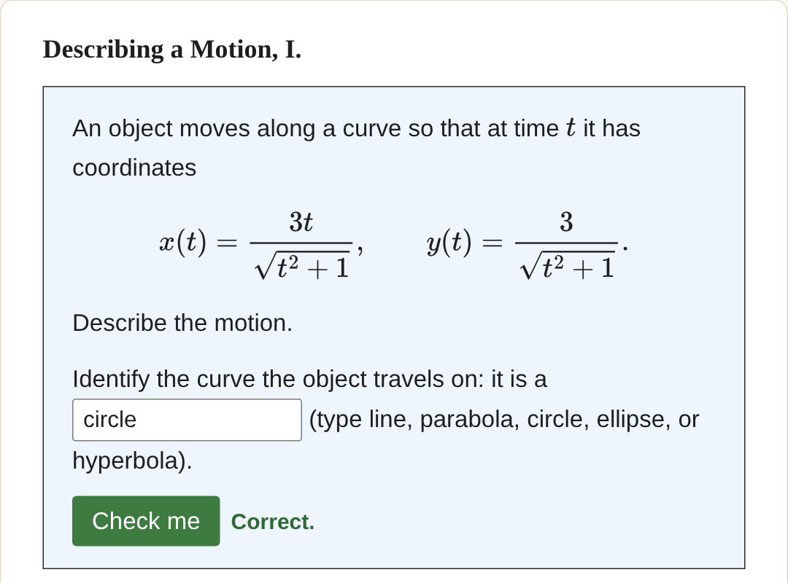
Web book: an answer box that checks.
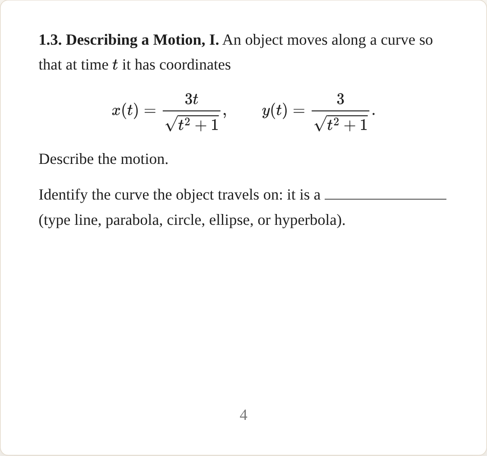
PDF: a numbered problem with a blank.
How it’s coded · Writing the content · step 1 of 5. The outline lives in main.ptx. Each section is its own file, pulled in with <xi:include>, so reordering or hiding a section is a one-line change.
From MATH-14/source/main.ptx
<book xml:id="math14">
<title>MATH 14: Calculus and Analytic Geometry IV</title>
<xi:include href="frontmatter.ptx" />
<chapter xml:id="ch-curves-and-fields">
<title>Line Integrals</title>
<xi:include href="section-parametrization.ptx" />
<xi:include href="section-arc-length.ptx" />
<xi:include href="section-line-integrals.ptx" />
<xi:include href="section-vector-fields.ptx" />
<xi:include href="conservative-fields.ptx" />
</chapter>
…
</book>
How it’s coded · Writing the content · step 2 of 5. Structure is markup: <subsection>, <definition>, <example>, <exercise>. Every xml:id becomes a stable web address and something you can cite.
From MATH-14/source/section-parametrization.ptx
<section xml:id="sec-parametrization">
<title>Parametrization of Curves</title>
<objectives> … </objectives>
…
<subsection xml:id="subsec-parametric-equations">
<title>Parametric Equations</title>
…
<definition xml:id="def-parametric-equations">
<title>Parametric Equations</title>
<statement> … </statement>
</definition>
…
</subsection>
…
</section>
How it’s coded · Writing the content · step 3 of 5. Mathematics is LaTeX: <m> inline, <md> displayed, with an <mrow> per line for aligned rows. number="yes" numbers a row; its xml:id lets you cite it. (Older sources, these books included, write <me> for one displayed line; PreTeXt deprecated it in May 2026.)
From MATH-14/source/section-parametrization.ptx
<p>
Assume that we are interested in describing the path of an object in
space. To this aim, we can specify its location at each instant of
time; that is, we can write its coordinates in <m>\R^3</m> as
<md>
<mrow xml:id="eq-space-parametric" number="yes">
x = f(t), \qquad y = g(t), \qquad z = h(t).
</mrow>
</md>
How it’s coded · Writing the content · step 4 of 5. An exercise has a <statement> and optional <hint>, <answer>, <solution>. A <var/> is an answer box; <setup> says what counts as right and what to say about a likely wrong answer.
From MATH14-Skeletal/source/hw1-online.ptx
…
<p>
Identify the curve the object travels on: it
is a <var width="10"/> (type <c>line</c>, <c>parabola</c>, <c>circle</c>,
<c>ellipse</c>, or <c>hyperbola</c>).
</p>
<p>
Then graph the path and indicate the direction of motion. There is
no box for this part: include the graph in the solution you submit
to the grader.
</p>
</statement>
<setup>
<var case="insensitive">
<condition string="circle">
<feedback>
<p>Correct.</p>
</feedback>
</condition>
…
How it’s coded · Writing the content · step 5 of 5. Declare LaTeX macros and the TikZ preamble once in <docinfo>. \R then works on the web, in the PDF, and in every <latex-image>; named colours keep the figures consistent.
From M13-Mehdi/source/main.ptx
…
\newcommand{\deriv}[2]{\displaystyle \frac{d#1}{d#2}}
\newcommand{\real}{\Bbb R}
\newcommand{\R}{\mathbb{R}}
</macros>
<latex-image-preamble>
\usepackage{tikz}
\usepackage{amsmath}
\usetikzlibrary{decorations.pathmorphing, arrows.meta, calc}
\usepackage{tikz-3dplot}
\usepackage{pgfplots}
\pgfplotsset{compat=1.17}
<!-- Palette used by the figures in ch-12-5.ptx, matching the colors of
the animations they were drawn from. msky is the light fill for
planes; the others are used for lines, vectors and points. -->
\definecolor{mblue}{HTML}{2B6CB0}
\definecolor{msky}{HTML}{58C4DD}
\definecolor{mred}{HTML}{E04B4B}
…
Hyperbolic functions · series and Taylor approximation · vectors, lines, planes, and quadric surfaces · partial derivatives, gradients, extreme values, and Lagrange multipliers.
| 169 | 37 | 58 | 205 |
| accessible diagrams | live figures | short animations | exercises |
| PreFigure, every part described | Plotly, Three.js, GeoGebra, Desmos | Manim videos of constructions | solutions after the due date |
Counted from the book’s source repository, October 2026.
Also in the book: whispering galleries, LORAN navigation, an interstellar comet’s orbit, the torque on a wrench, a dipole’s field, isobars around a low, and the small-angle pendulum.
How it’s coded · Photos and alt text · step 1 of 3. A <figure> gives the photo a number and a caption. <image source> points at the file and sets its width; <shortdescription> is the alt text a screen reader speaks.
From M13-Mehdi/source/ch-7-3.ptx
<figure xml:id="fig-hyp-gateway-arch">
<caption>
The Gateway Arch in St. Louis, Missouri. Its centerline follows the
curve <m>y = A\left(\cosh(Cx/L) - 1\right)</m>, an upside-down catenary.
(Photograph by John Margolies, 1988; John Margolies Roadside America
photograph archive, Library of Congress, Prints and Photographs
Division.)
</caption>
<image source="app-catenary-gateway-arch.jpg" width="48%">
<shortdescription>
The stainless steel Gateway Arch rising from a line of trees against a
clear blue sky, curving up to a rounded peak and back down.
</shortdescription>
</image>
</figure>
How it’s coded · Photos and alt text · step 2 of 3. Files named in source live in assets/. The web build copies them to external/; the PDF build reads them where they are.
From M13-Mehdi/publication/publication.ptx
<!-- publication/publication.ptx -->
<directories external="../assets" generated="../generated-assets"/>
<!-- so source="app-catenary-gateway-arch.jpg" is the file
assets/app-catenary-gateway-arch.jpg, which the web build
copies to external/ next to the pages -->
How it’s coded · Photos and alt text · step 3 of 3. Any paragraph can cite the figure with <xref>. PreTeXt writes its current number and keeps it right when figures are added or moved.
From M13-Mehdi/source/ch-7-3.ptx
thicker at the base than at the top. It stands 630 feet tall and 630
feet wide at the base; the National Park Service describes its
construction and its geometry at
<url href="https://www.nps.gov/jeff/index.htm" visual="nps.gov">Gateway Arch National
Park</url>.
See <xref ref="fig-hyp-gateway-arch"/>.
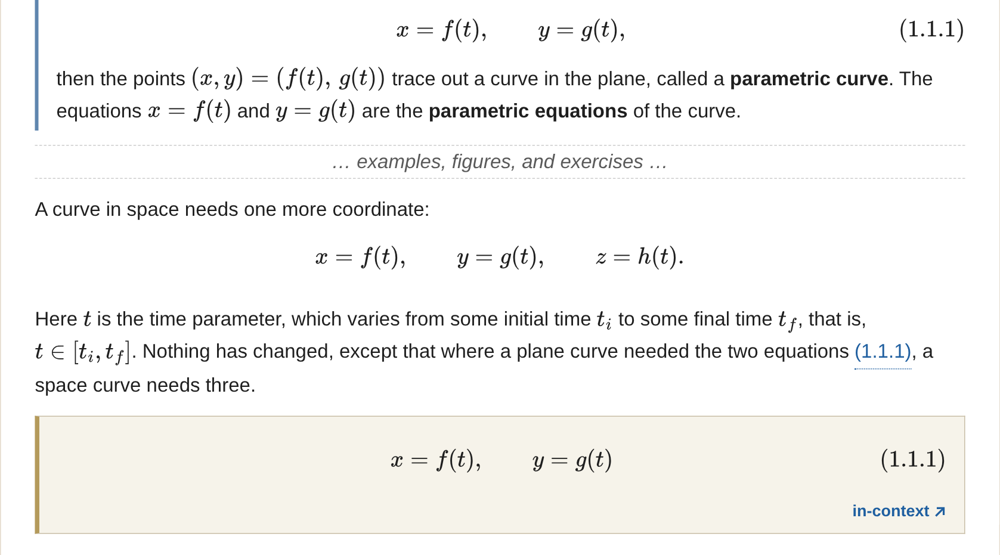
Click (1.1.1). The equation drops down right under the sentence. Nobody loses their place.
Click in-context. The page jumps to where the equation lives, inside its definition.
Every reference works this way: definitions, theorems, equations, figures, and exercises, with no extra markup.
How it’s coded · Cross-references · step 1 of 3. Put an xml:id on whatever you want to cite: here the definition and the numbered equation row inside it.
From MATH-14/source/section-parametrization.ptx
<definition xml:id="def-parametric-equations">
<title>Parametric Equations</title>
<statement>
<p>
If <m>x</m> and <m>y</m> are given as functions of a third
variable <m>t</m>, called a <term>parameter</term>, by
<md>
<mrow xml:id="eq-parametric-equations" number="yes">
x = f(t), \qquad y = g(t),
</mrow>
</md>
How it’s coded · Cross-references · step 2 of 3. <xref ref="eq-parametric-equations"/> prints the number, (1.1.1). On the web it opens the equation in place; in the PDF it is a link.
From MATH-14/source/section-parametrization.ptx
<p>
Here <m>t</m> is the time parameter, which varies from some initial
time <m>t_i</m> to some final time <m>t_f</m>, that is,
<m>t \in [t_i, t_f]</m>. Nothing has changed, except that where a
plane curve needed the two equations
<xref ref="eq-parametric-equations"/>, a space curve needs three.
</p>
How it’s coded · Cross-references · step 3 of 3. text="title" prints the target’s title instead of its number: the assignment names the sections it draws on, and each name is a link.
From MATH-14/source/hw1-online.ptx
<p>
Sections: <xref ref="sec-parametrization" text="title"/> and
<xref ref="sec-arc-length" text="title"/>. Work each problem, then type your answers
into the boxes and have them checked here.
</p>
Slicing the hyperbolic paraboloid z = x squared over 4 minus y squared over 9 with planes x = c, y = c, and z = c.
Pick \(x = c\text{,}\) \(y = c\text{,}\) or \(z = c\) and drag \(c\text{.}\) The traces switch between parabolas and hyperbolas; \(z = 0\) gives two crossing lines.
Plotly, in an ordinary web page placed with <interactive iframe>.
A double cone cut by a tilting plane; the cut changes from ellipse to parabola to hyperbola.
Press Play: the plane \(z = my + 1\) swings from horizontal to steep. The circle stretches to an ellipse, opens into a parabola at \(m = 1\text{,}\) then breaks into a hyperbola.
Three.js, drawn in the Manim style.
The surface z = 1 + x squared + y squared cut by a vertical plane through P zero that turns around; the tangent to the cut is colored by direction.
Press Play: the vertical plane through \(P_0(1, 1)\) turns once around. The tangent to the cut is steepest along \(\nabla f\text{,}\) steepest down along \(-\nabla f\text{,}\) and level along the level curve.
The pressure field around a low, with a ship that either circles the eye along an isobar or runs outward along the gradient, and a barometer reading.
Press “Circle the low”, then “Run for open water”, and watch the barometer: along an isobar the pressure stays put; across them it changes fastest.
Web only: the PDF prints a sentence in its place.
The rose \(r = \cos 3\theta\) and the circle \(r = \tfrac12\text{.}\) Drag \(\theta\text{:}\) the dots mark where the ray meets each curve, which is what fixes the limits of \(r\) in the double integral.
platform="javascript" loads a script; <slate surface="html"> holds the canvas and slider it draws into.
How it’s coded · The quadric slicer · step 1 of 5. MathJax and Plotly come from a CDN; three buttons choose the slicing plane, a slider sets c, and an empty div is where Plotly draws.
From M13-Mehdi/assets/hyperbolic-paraboloid-slices.html
<script src="https://cdn.jsdelivr.net/npm/mathjax@3/es5/tex-chtml.js"></script>
<script src="https://cdn.plot.ly/plotly-2.35.2.min.js"></script>
…
<div class="controls">
<span class="btn-group">
<button class="axis-btn" data-axis="x">\(x = c\)</button>
<button class="axis-btn" data-axis="y">\(y = c\)</button>
<button class="axis-btn" data-axis="z">\(z = c\)</button>
</span>
<span class="slider-box">
<input type="range" id="cslider">
<span class="cval"><span class="cname">c</span> = <span id="cval"></span></span>
</span>
<button id="rotateBtn">Rotate</button>
</div>
<div id="plot"></div>
How it’s coded · The quadric slicer · step 2 of 5. A \(41 \times 41\) grid of \((x, y)\) values with \(z = x^2/4 - y^2/9\) at each. Plotly shades the grid as a surface.
From M13-Mehdi/assets/hyperbolic-paraboloid-slices.html
var CONFIG = {
ranges: { x: [-4.6, 4.6], y: [-6.9, 6.9], z: [-4.6, 4.6] },
sliders: { x: [-4, 4], y: [-6, 6], z: [-4, 4] },
defaults: { axis: 'x', c: 2 },
surface: function () {
var n = 41, X = [], Y = [], Z = [];
for (var i = 0; i < n; i++) {
var y = -6 + 12 * i / (n - 1), xr = [], yr = [], zr = [];
for (var j = 0; j < n; j++) {
var x = -4 + 8 * j / (n - 1);
xr.push(x); yr.push(y); zr.push(x * x / 4 - y * y / 9);
}
X.push(xr); Y.push(yr); Z.push(zr);
}
return { x: X, y: Y, z: Z };
},
…
How it’s coded · The quadric slicer · step 3 of 5. Each trace is worked out by hand and coded: \(x = c\) gives the parabola \(z = c^2/4 - y^2/9\text{;}\) \(z = c\) gives a hyperbola, parametrized with \(\cosh\) and \(\sinh\text{,}\) one branch for each sign.
From M13-Mehdi/assets/hyperbolic-paraboloid-slices.html
…
var latex = 'z = ' + (v ? fmt(v) + ' - ' : '-') + '\\frac{y^2}{9}';
return {
curves: [curve(function (y) { return [c, y, v - y * y / 9]; }, -6, 6, 121)],
latex: latex, kind: 'parabola'
};
}
…
var branches = [];
if (c > 0) {
[1, -1].forEach(function (sg) {
branches.push(curve(function (t) {
return [sg * 2 * s * Math.cosh(t), 3 * s * Math.sinh(t), c];
}, -T, T, 121));
});
} else {
[1, -1].forEach(function (sg) {
branches.push(curve(function (t) {
return [2 * s * Math.sinh(t), sg * 3 * s * Math.cosh(t), c];
…
How it’s coded · The quadric slicer · step 4 of 5. Each slider move rebuilds the traces and calls Plotly.react, which redraws in place. The equation above the plot is typeset again only when its text changes.
From M13-Mehdi/assets/hyperbolic-paraboloid-slices.html
…
type: 'scatter3d', mode: 'markers', x: [p[0]], y: [p[1]], z: [p[2]],
marker: { color: col, size: 5 }, hoverinfo: 'skip'
});
});
Plotly.react(gd, data, layout, { displayModeBar: false, responsive: true });
cval.textContent = fmt(c);
var html = '\\(' + axis + ' = ' + fmt(c) + ':\\;\\;\\; ' + s.latex + '\\)' +
' <span class="kind">(' + s.kind + ')</span>';
if (html !== lastTypeset) {
lastTypeset = html;
readout.innerHTML = html;
if (window.MathJax && MathJax.typesetPromise) MathJax.typesetPromise([readout]);
}
}
…
slider.addEventListener('input', function () {
c = parseFloat(slider.value);
update();
…
How it’s coded · The quadric slicer · step 5 of 5. Save the page in assets/ and embed it with one <interactive iframe>. For the PDF, pretext generate interactive -t print takes a screenshot, and a QR code links to the live figure.
From M13-Mehdi/source/QuadricSurface.ptx
<figure xml:id="fig-hyperbolic-paraboloid-slices">
<caption>
Slicing the hyperbolic paraboloid
<m>z = \frac{x^2}{4} - \frac{y^2}{9}</m>
with planes <m>x = c</m>, <m>y = c</m>, and <m>z = c</m>.
</caption>
<interactive xml:id="interactive-hyperbolic-paraboloid-slices"
iframe="hyperbolic-paraboloid-slices.html"
width="100%" aspect="8:7">
<instructions>
<p>
Use the buttons to slice the surface with planes <m>x=c</m>,
<m>y=c</m>, or <m>z=c</m>, and drag the slider to vary <m>c</m>.
The equation of each cross-section is displayed above the
figure. Drag the figure to view it from a different angle, or
press the <q>Rotate</q> button to spin it automatically.</p>
</instructions>
</interactive>
…
How it’s coded · The isobars figure · step 1 of 3. The pressure field, its gradient, and the isobars sit in one configuration object; the rest of the file draws whatever it describes, so a new field means editing this block.
From M13-Mehdi/assets/isobars-low-3d.html
const CFG = {
xmin:-72, xmax:72, ymin:-44.2, ymax:44.2,
vmin:988, vmax:1017,
f:function(x,y){return 988+0.004*(x*x+y*y);},
grad:function(x,y){return [0.008*x,0.008*y];},
palette:[[0,[46,8,40]],[.22,[122,26,74]],[.44,[196,66,58]],
[.64,[214,142,54]],[.82,[70,140,110]],[1,[26,62,104]]],
contours:[992,996,1000,1004,1008],
level:990, levelColor:'#FFD166',
levelLabel:'isobar 990 mb \u00B7 r = 22.4 mi',
axisLabel:'P(x,y) = 988 + 0.004(x\u00B2 + y\u00B2)',
curve:function(v,t){var r=Math.sqrt((v-988)/0.004);
return [r*Math.cos(t), r*Math.sin(t)];},
How it’s coded · The isobars figure · step 2 of 3. Each heading is a path and a rate of change: zero around the isobar, \(\nabla P \cdot \mathbf{u}\) running outward.
From M13-Mehdi/assets/isobars-low-3d.html
modes:[
{id:'iso', label:'Circle the low', tint:'#FFD166', loop:true,
rate:0.30, smax:Math.PI*2,
pos:function(s){var r=Math.sqrt(500), t=Math.atan2(10,20)+s;
return [r*Math.cos(t), r*Math.sin(t)];},
du:function(){return 0;},
status:function(){return 'Holding 990 mb';}},
{id:'out', label:'Run for open water', tint:'#7FE3C0', loop:false,
rate:11, smax:54,
pos:function(s){return [20+2/Math.sqrt(5)*s, 10+1/Math.sqrt(5)*s];},
du:function(x,y){return 0.008*x*(2/Math.sqrt(5))+0.008*y*(1/Math.sqrt(5));},
How it’s coded · The isobars figure · step 3 of 3. component="web" and component="print" mark two versions; each build’s <version include> keeps one.
From M13-Mehdi/source/assignment-8-chain-rule.ptx
<!-- Assignment 8, in the answer to the sailing problem -->
<p component="print">
An interactive figure of the pressure field <mdash/> the two
headings switchable, with the barometer responding as the ship
moves <mdash/> accompanies the online version of these notes.
</p>
<sidebyside component="web" width="100%">
<figure xml:id="figure-isobars-low">
<caption>The pressure field <m>P(x,y) = 988 + 0.004(x^2+y^2)</m>
around a low. One heading circles the eye at constant
<m>990</m> mb; the other runs outward along <m>\nabla P</m>. …
</caption>
<interactive xml:id="interactive-isobars-low"
iframe="isobars-low-3d.html"
width="100%" aspect="16:10"/>
</figure>
</sidebyside>
How it’s coded · The polar rose · step 1 of 4. Each widget is a configuration: its window, two polar curves and their colours, where the labels go, and the text of the readout.
From MATH-14/assets/polar-widget.js
var WIDGETS = {
rose: {
xmin: -1.25, xmax: 1.25, ymin: -1.25, ymax: 1.25, rings: 2, raylen: 1.2,
f1: function (t) { return Math.cos(3 * t); }, c1: "#CC0000",
f2: function () { return 0.5; }, c2: "#0072B2",
l1: "r = cos(3θ)", l1p: [0.42, -1.05],
l2: "r = 1/2", l2p: [-1.15, 0.62],
readout: function (t, k) {
var rose = Math.cos(3 * t);
var top = Math.min(Math.max(rose, 0), 0.5);
return "<b>θ = " + piFraction(k) + "</b><br/>" +
"cos(3θ) = " + rose.toFixed(3) + ", so inside both curves " +
"<i>r</i> runs from 0 to " + top.toFixed(3) +
(rose > 0.5 ? " (the circle)" : (rose > 0 ? " (the rose)" : " (nothing)"));
}
},
cardioids: { … }
};
How it’s coded · The polar rose · step 2 of 4. Points (r cos t, r sin t) for 1,441 values of t; X and Y turn math coordinates into canvas pixels.
From MATH-14/assets/polar-widget.js
function X(x) { return (x - (cfg.xmin + cfg.xmax) / 2) * s + W / 2; }
function Y(y) { return H / 2 - (y - (cfg.ymin + cfg.ymax) / 2) * s; }
function polarCurve(f, stroke) {
ctx.beginPath();
for (var i = 0; i <= 1440; i++) {
var t = i * Math.PI / 720, r = f(t);
var px = X(r * Math.cos(t)), py = Y(r * Math.sin(t));
if (i === 0) { ctx.moveTo(px, py); } else { ctx.lineTo(px, py); }
}
ctx.strokeStyle = stroke;
ctx.lineWidth = 2.5;
ctx.stroke();
}
How it’s coded · The polar rose · step 3 of 4. The script finds every element marked data-widget and builds a widget in each.
From MATH-14/assets/polar-widget.js
function init() {
var boxes = document.querySelectorAll("[data-widget]"), i;
for (i = 0; i < boxes.length; i++) { build(boxes[i]); }
}
if (document.readyState === "loading") {
document.addEventListener("DOMContentLoaded", init);
} else {
init();
}
How it’s coded · The polar rose · step 4 of 4. platform="javascript" loads the script; <slate surface="html"> holds the canvas, slider, and readout it fills in.
From MATH-14/source/double-integrals-polar-form.ptx
<figure xml:id="fig-polar-rose-circle">
<caption>
Figure (2): the rose <m>r=\cos(3\theta)</m> and the circle
<m>r=\frac12</m>. Drag the slider to turn the ray of angle
<m>\theta</m>; …
</caption>
<interactive xml:id="int-polar-rose" platform="javascript"
source="polar-widget.js" width="100%" aspect="10:11">
<slate surface="html">
<!-- inline styles trimmed -->
<div data-widget="rose">
<canvas width="460" height="460"></canvas>
<label for="rose-theta">θ</label>
<input id="rose-theta" type="range" min="0" max="48"
value="0" step="1"/>
<div class="pw-readout"></div>
</div>
</slate>
…
The red curve is the graph of \(f(x) = e^x\) and the blue curve is the graph of the Taylor polynomial \(p_2(x)\text{.}\) The vertical distance between the red and blue points at \(x = 0.5\) is the error of the approximation, which stays below the bound \(0.03435\text{.}\)
Taylor’s formula: \(e^x\) against \(p_2\text{,}\) with the error at \(x = 0.5\text{.}\) The whole embed is one element, <interactive geogebra="xzdc5jpq">. Section 2.3 in the book
How it’s coded · GeoGebra · step 1 of 4. Build the applet in GeoGebra. MATH 14 keeps each construction as commands pasted one per row into the input bar, so it can be rebuilt or changed later.
From MATH-14/assets/geogebra/paraglider_arclength.commands.txt
# GeoGebra Classic (3D view) — Paraglider distance travelled (3D)
# Open a 3D Graphics view, paste these into the input bar one per row,
# then File > Share to publish and obtain a material ID.
t = Slider(0, 9, 0.01)
SetValue(t, 4.5)
path = Curve(u cos(u), u sin(u), 9 sqrt(8) - sqrt(8)/3 u^(3/2), u, 0, 9)
SetColor(path, 0, 102, 204)
SetLineThickness(path, 5)
P = (t cos(t), t sin(t), 9 sqrt(8) - sqrt(8)/3 t^(3/2))
SetColor(P, 255, 102, 0)
SetPointSize(P, 6)
A = (0, 0, 9 sqrt(8))
SetColor(A, 204, 0, 0)
B = (9 cos(9), 9 sin(9), 0)
SetColor(B, 204, 0, 0)
s = t^2 / 2 + t
speed = Text("|v(t)| = t + 1", (-9, 9, 27))
…
How it’s coded · GeoGebra · step 2 of 4. Save the .ggb in assets/geogebra and load it with a <slate>, as MATH 14 does, or share it and use its material id.
From MATH-14/source/conservative-fields.ptx
<interactive platform="geogebra" width="100%" aspect="600:500">
<slate surface="geogebra" source="geogebra/vf-fig3-segment.ggb"
aspect="600:500" material-width="600" material-height="500"/>
<instructions>
<p>
Drag the slider to move the point along the segment from <m>A</m> to
<m>B</m>. The applet draws the field vector <m>\mathbf{F}</m> and the unit
tangent <m>\hat{\mathbf{T}}</m> at that point, so what the integral
accumulates is the length of the projection of <m>\mathbf{F}</m> onto
<m>\hat{\mathbf{T}}</m>. Rotate the view to see how the segment sits
relative to the field.
</p>
</instructions>
</interactive>
How it’s coded · GeoGebra · step 3 of 4. With a material id the embed is one element. <description> tells a screen-reader user what the applet shows.
From M13-Mehdi/source/Taylor.ptx
<!-- Example: the error in approximating e^0.5 by p_2(0.5) -->
<interactive geogebra="xzdc5jpq" width="95%" aspect="16:11">
<description>
<p>
The red curve is the graph of <m>f(x) = e^x</m> and the blue
curve is the graph of the Taylor polynomial <m>p_2(x)</m>.
The exact value of <m>e^{0.5}</m> is represented by the red point
and the approximation given by <m>p_2(0.5)</m> is represented by
the blue point. The vertical distance between the two points
represents the error in the approximation. Note that the error
is less than the upper bound we calculated, i.e., <m>0.03435</m>.
</p>
</description>
</interactive>
How it’s coded · GeoGebra · step 4 of 4. A small template gives every applet GeoGebra’s fullscreen button, then hands off to PreTeXt’s own template with apply-imports.
From MATH14-Skeletal/xsl/custom-html.xsl
<!-- Every GeoGebra applet gets GeoGebra's own fullscreen button. -->
<!-- The core slate template writes the applet-parameter object inline -->
<!-- and offers no hook for extra parameters, so instead of copying the -->
<!-- whole template we emit a small shim first and then defer to it via -->
<!-- apply-imports. The shim wraps window.GGBApplet so that any -->
<!-- parameter object passing through it picks up -->
<!-- showFullscreenButton: true (unless the author set it). deployggb -->
<!-- loads synchronously in the head, so GGBApplet exists by the time -->
<!-- this body script runs; the setter branch covers it loading later. -->
<xsl:template match="slate[@surface='geogebra']">
<script>
<![CDATA[(function () {
if (window.ggbFullscreenShim) { return; }
…
Switch on \(p_1, p_3, p_5\) for \(\sin x\) and see where each one peels away.
<interactive desmos="7b85e78f17"
width="70%" aspect="1:2"/>
How it’s coded · Desmos · step 1 of 4. Braces restrict each curve to \([-\pi/2, \pi/2]\text{.}\) The Taylor polynomials are left switched off so students turn them on.
From Desmos expression list
f(x) = sin(x) {-π/2 ≤ x ≤ π/2}
"Plot the Taylor polynomials by clicking on the circles on the left."
p_1(x) = x {-π/2 ≤ x ≤ π/2}
p_3(x) = x - x^3/3! {-π/2 ≤ x ≤ π/2}
p_5(x) = x - x^3/3! + x^5/5! {-π/2 ≤ x ≤ π/2}
… the exact error and the error bound follow
How it’s coded · Desmos · step 2 of 4. The id PreTeXt needs is the last part of the share link.
From Desmos
Share › copy link:
https://www.desmos.com/calculator/7b85e78f17
^^^^^^^^^^ the id PreTeXt needs
How it’s coded · Desmos · step 3 of 4. One empty element, here inside the solution of the example on choosing n.
From M13-Mehdi/source/Taylor.ptx
<example xml:id="ex-error-bound-sin-degree">
<title> Finding the value of <m>n</m> such that the error is less
than a given tolerance</title>
…
<solution>
…
<p>
We can check the values of <m>n</m> starting from <m>n=0</m>
until we find the smallest value of <m>n</m> that satisfies the
inequality. After checking, we find that the smallest value of
<m>n</m> that satisfies the inequality is <m>n=8</m>.
</p>
<interactive desmos="7b85e78f17" width="70%" aspect="1:2" />
</solution>
</example>
How it’s coded · Desmos · step 4 of 4. The CLI screenshots each interactive into generated-assets/preview, named after the enclosing example; a QR code links to the live graph.
From Terminal
# screenshot every interactive for the PDF
pretext generate interactive -t print
# M13-Mehdi/generated-assets/preview/
ex-error-bound-sin-degree-3-8-preview.png # this Desmos graph
ex-error-bound-exp-3-6-preview.png # a GeoGebra applet
interactive-conic-slicer-preview.png # an HTML figure
The secant rotating onto the tangent, on \(z = 1 + x^2 + y^2\) at \((1, 1)\text{.}\) Section 4.5
The secant through two points of the surface z = 1 + x squared + y squared rotating onto the tangent line as s goes to zero.
The secant slope is \(2\sqrt2 + s\text{;}\) as \(s \to 0\) it becomes the directional derivative \(2\sqrt2 \approx 2.828\text{.}\)
Videos for constructions; interactives where the student should drive.
How it’s coded · The Manim video · step 1 of 5. A Manim scene is a Python file. The construction’s numbers sit at the top: \(P_0\text{,}\) the unit vector \(\mathbf{u}\text{,}\) the function, and how far the step \(s\) runs.
From M13-Mehdi/assets/manim/dirderiv_secant_tangent.py
from manim import *
import numpy as np
# ---- the construction -------------------------------------------------------
X0, Y0 = 0.25, 0.25 # P0
C = 1.0 / np.sqrt(2.0) # u = (C, C), a unit vector
S_START, S_END = 1.5, 0.05 # the step s runs from here to here
def f(x, y):
return 1.0 + x * x + y * y
def ray(t):
"""The point P0 + t*u in the xy-plane."""
return X0 + t * C, Y0 + t * C
…
How it’s coded · The Manim video · step 2 of 5. Axes turn math coordinates into scene points; the surface is a parametric patch with a checkerboard fill; the trace is f along the ray.
From M13-Mehdi/assets/manim/dirderiv_secant_tangent.py
class SecantToTangent(ThreeDScene):
def construct(self):
ax = ThreeDAxes(
x_range=[XY_MIN, XY_MAX, 1],
y_range=[XY_MIN, XY_MAX, 1],
z_range=[0, Z_MAX, 1],
…
surf = Surface(
lambda r, th: p3(r * np.cos(th), r * np.sin(th), 1.0 + r * r),
u_range=[0.001, R_SURF], v_range=[0, TAU],
resolution=(16, 48), stroke_width=0.6, stroke_opacity=0.25,
)
surf.set_fill_by_checkerboard(BLUE_D, BLUE_E, opacity=0.45)
…
trace = ParametricFunction(
lambda t: p3(*ray(t), g(t)),
t_range=[T_MIN, T_MAX], color=TRACE, stroke_width=7,
)
How it’s coded · The Manim video · step 3 of 5. One ValueTracker holds s. always_redraw rebuilds the point and the secant from s on every frame.
From M13-Mehdi/assets/manim/dirderiv_secant_tangent.py
s = ValueTracker(S_START)
…
def secant_line():
sv = s.get_value()
x1, y1 = ray(sv)
start, end = np.array(p3(X0, Y0, g(0.0))), np.array(p3(x1, y1, g(sv)))
d = end - start
n = np.linalg.norm(d)
d = d / n if n > 1e-9 else d
return Line(start - 1.15 * d, end + 0.45 * d,
color=SECANT, stroke_width=9)
…
sec = always_redraw(secant_line)
How it’s coded · The Manim video · step 4 of 5. Moving the tracker from 1.5 to 0.05 swings the secant onto the tangent. The command in the file’s header renders the .mp4 into assets/videos.
From M13-Mehdi/assets/manim/dirderiv_secant_tangent.py
"""Figure 18.4: the secant through (P0, f(P0)) and (P, f(P)) rotating onto the
tangent line at P0 as s -> 0.
Renders to assets/videos/dirderiv_secant_tangent_manim.mp4:
manim -qh --disable_caching -o dirderiv_secant_tangent_manim \
assets/manim/dirderiv_secant_tangent.py SecantToTangent
"""
…
self.play(s.animate.set_value(S_END), run_time=6.5,
rate_func=rate_functions.ease_in_out_sine)
How it’s coded · The Manim video · step 5 of 5. A <video> in a captioned figure; width and aspect size the player.
From M13-Mehdi/source/directional-derivatives.ptx
<figure>
<caption>
… The secant line through <m>(P_0, f(P_0))</m> and
<m>(P, f(P))</m> has slope <m>\big(f(P) - f(P_0)\big)/s</m>, and
as <m>s \to 0</m> it rotates onto the tangent line, whose slope is
the directional derivative <m>\left(D_{\hat{u}} f\right)_{P_0}</m>.
</caption>
<video xml:id="video-dirderiv-setup"
source="videos/dirderiv_secant_tangent_manim.mp4"
width="100%" aspect="16:9"/>
</figure>
How it’s coded · The Manim-style interactive · step 1 of 4. The same construction at the book’s point \(P_0(1, 1)\text{,}\) where \(D_{\mathbf{u}} f = 2\sqrt{2}\text{.}\)
From M13-Mehdi/assets/dirderiv-secant-3d-manim.html
var C = 1 / Math.sqrt(2); // u = (C, C), a unit vector
var R2 = 2 * Math.sqrt(2); // the directional derivative itself
function f(x, y) { return 1 + x * x + y * y; }
// The surface is drawn over the disc of radius RMAX. Along the ray from
// P0(1,1) in the direction u the point (1 + tC, 1 + tC) has radius
// sqrt(2)|1 + tC|, so the ray stays over that disc for t in [T0, T1]:
var RMAX = 2.2;
var T1 = RMAX - Math.SQRT2; // = 0.786, and the slider stops short of it
var T0 = -RMAX - Math.SQRT2;
var ZTOP = f(RMAX, 0); // the rim of the drawn patch
How it’s coded · The Manim-style interactive · step 2 of 4. Each change of \(s\) rebuilds the moving point, its two dashed heights, and the secant through \(P_0\) and \(P\text{.}\)
From M13-Mehdi/assets/dirderiv-secant-3d-manim.html
…
var Q = new THREE.Vector3(p.x, p.y, g(sVal));
var P0 = new THREE.Vector3(1, 1, 3);
// the moving point, on the surface and on the ground
var qs = new THREE.Mesh(new THREE.SphereGeometry(0.075, 18, 18), redMat);
qs.position.copy(Q); movGroup.add(qs);
var qb = new THREE.Mesh(new THREE.SphereGeometry(0.055, 16, 16), redMat);
qb.position.set(p.x, p.y, 0); movGroup.add(qb);
pLabel.position.set(Q.x + 0.42, Q.y + 0.42, Q.z + 0.30);
// the two heights, dropped to the ground
dashed(new THREE.Vector3(1, 1, 0), P0, 0x8a8f9c);
dashed(new THREE.Vector3(p.x, p.y, 0), Q, 0xfc6255);
// the secant through the two points on the surface, extended a little
var dirv = Q.clone().sub(P0).normalize();
tube([P0.clone().addScaledVector(dirv, -1.3), Q.clone().addScaledVector(dirv, 0.9)],
RED_C, 0.030, movGroup);
…
How it’s coded · The Manim-style interactive · step 3 of 4. The secant slope is exactly \(2\sqrt{2} + s\text{,}\) so the readout shows the limit happening; its colour moves to the tangent’s green as \(s \to 0\text{.}\)
From M13-Mehdi/assets/dirderiv-secant-3d-manim.html
function paintReadouts() {
var slope = R2 + sVal; // ( f(P) - f(P0) ) / s
elName.textContent = "secant slope = " + slope.toFixed(3);
// the closer s gets to 0, the more the secant reading takes the tangent's colour
elName.style.color = mix(GREEN_C, RED_C, Math.min(1, sVal / S_MAX));
elSec.textContent = slope.toFixed(3);
…
}
How it’s coded · The Manim-style interactive · step 4 of 4. It enters the book like any interactive, in the same section as the video.
From M13-Mehdi/source/directional-derivatives.ptx
<figure xml:id="fig-int-dirderiv-secant-3d-manim">
<caption>
The secant through <m>(P_0, f(P_0))</m> and <m>(P, f(P))</m> on
the surface <m>z = 1 + x^2 + y^2</m>, rotating onto the tangent
line at <m>P_0</m> as <m>s \to 0</m>, with slope
<m>2\sqrt2 + s \to 2\sqrt2</m>.
</caption>
<interactive xml:id="interactive-dirderiv-secant-3d-manim"
iframe="dirderiv-secant-3d-manim.html"
width="100%" aspect="1:1">
<instructions>
<p>
Press <q>Play</q> to watch the whole construction in one
continuous motion … The reading at the lower left compares the
secant slope <m>2\sqrt 2 + s</m> with the tangent slope
<m>2\sqrt 2</m>, which is the directional derivative
<m>\left(D_{\hat{u}} f\right)_{P_0}</m>. …
</p>
…
Whispering gallery · MATH 13
How good is \(\sin\theta \approx \theta\text{?}\) · MATH 13
Curl as circulation · MATH 14
Green’s theorem, the proof idea · MATH 14
How it’s coded · Videos · step 1 of 3. MATH 14 keeps a Python script for each video. Its docstring records what the video argues, what it leaves out, and how to run it.
From MATH-14/scripts/make_green_proof_idea_video.py
…
integrals, and every line of the algebra in the written proof. What is
present is the chain of ideas that algebra exists to support:
1. the statement: circulation around C, against the integral of the
k-component of the curl over the inside;
2. that curl is circulation per unit area -- what one tiny rectangle says;
3. chop R into such rectangles;
4. add the circulation around every rectangle;
5. every interior edge is travelled twice, once in each direction, so the
interior cancels in pairs;
6. only the outer edges survive: the sum of the little circulations IS
the boundary integral, and the sum of (curl F . k) dA is the double
integral;
7. the same bookkeeping the divergence theorem keeps, one dimension up.
…
Run with: python3 scripts/make_green_proof_idea_video.py
How it’s coded · Videos · step 2 of 3. Rendered clips sit in assets/videos with the other external files.
From assets/videos
MATH-14/assets/videos/
green_proof_idea_1080p.mp4 # placed in greens-theorem.ptx
curl_circulation_1080p.mp4
stokes_proof_idea_1080p.mp4
divergence_proof_idea_1080p.mp4
… # 43 clips in all
M13-Mehdi/assets/videos/ # 58 clips
How it’s coded · Videos · step 3 of 3. <video source> in a captioned figure; width and aspect size the player.
From M13-Mehdi/source/Conics.ptx
<figure xml:id="vid-whispering-gallery">
<caption>Animation: sound leaves one focus in many directions,
reflects off the wall, and reconverges at the other
focus<mdash/>every path the same length <m>2a</m>.</caption>
<video xml:id="video-whispering-gallery"
source="videos/whispering_gallery_1080p.mp4"
width="90%" aspect="16:9"/>
</figure>
LORAN navigation, from the conics section. Click the figure, then press ↓ to step into its parts and ← → to move between them: each part has a spoken description, and the curve can be heard.
One source builds the web picture, the PDF, and a tactile graphic (next slide).
| Key | Action |
|---|---|
| Enter, A | Activate keyboard driven exploration |
| B | Activate menu driven exploration |
| Escape | Leave exploration mode |
| Cursor down | Explore next lower level |
| Cursor up | Explore next upper level |
| Cursor right | Explore next element on level |
| Cursor left | Explore previous element on level |
| X | Toggle expert mode |
| W | Extra details if available |
| Space | Repeat speech |
| M | Activate step magnification |
| Comma | Activate direct magnification |
| N | Deactivate magnification |
| Z | Toggle subtitles |
| C | Cycle contrast settings |
| T | Monochrome colours |
| L | Toggle language (if available) |
| K | Kill current sound |
| Y | Stop sound output |
| O | Start and stop sonification |
| P | Repeat sonification output |
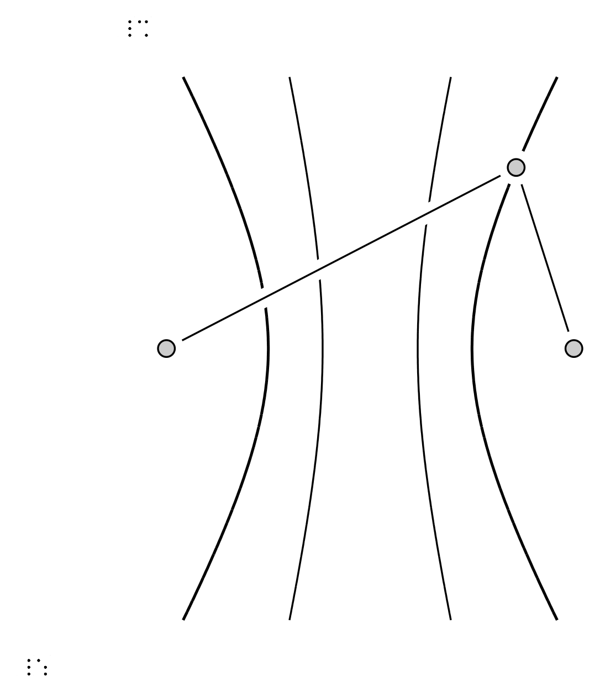
prefig build -f tactile turns the same diagram into an embossable page, with braille labels and the annotations kept.
How it’s coded · PreFigure · step 1 of 5. Inside <image>, a <prefigure> diagram starts with definitions: constants and functions in ordinary notation.
From M13-Mehdi/source/Conics.ptx
<figure xml:id="fig-hyperbola-loran">
<caption>Hyperbolic navigation. The measured delay places the unknown position
<m>A</m> on the
solid hyperbola with foci at the receivers <m>P_1</m> and <m>P_2</m>; a
different delay
would place it on the dashed one instead.</caption>
<image width="65%">
<prefigure xmlns="https://prefigure.org" label="hyperbola-loran">
<diagram dimensions="(400,320)" margins="8">
<definition>cc = 3</definition>
<definition>aa = 1.5</definition>
<definition>bb = sqrt(cc^2 - aa^2)</definition>
<definition>H(x,y) = x^2/aa^2 - y^2/bb^2</definition>
<definition>aa2 = 0.7</definition>
<definition>bb2 = sqrt(cc^2 - aa2^2)</definition>
<definition>H2(x,y) = x^2/aa2^2 - y^2/bb2^2</definition>
<definition>sP = 0.9</definition>
<coordinates bbox="(-5.0, -4.0, 5.0, 4.0)">
How it’s coded · PreFigure · step 2 of 5. Inside a coordinate box: an implicit curve H = 1, segments, points, and labels typeset as math. Each part gets an at name.
From M13-Mehdi/source/Conics.ptx
<coordinates bbox="(-5.0, -4.0, 5.0, 4.0)">
<implicit-curve at="locus2" function="H2" k="1" stroke="gray" thickness="1.5" dash="4 4"/>
<implicit-curve at="locus" function="H" k="1" stroke="blue" thickness="3"/>
<group at="signals">
<line p1="(-cc,0)" p2="(aa*cosh(sP), bb*sinh(sP))" stroke="orange" thickness="2"/>
<line p1="(cc,0)" p2="(aa*cosh(sP), bb*sinh(sP))" stroke="green" thickness="2"/>
</group>
<point at="ship" p="(aa*cosh(sP), bb*sinh(sP))" fill="red" size="4"/>
<label at="ship-label" anchor="(aa*cosh(sP), bb*sinh(sP))" alignment="ne"
offset="(6,2)"><m>A</m></label>
<point at="s2" p="(-cc,0)" fill="black" size="4"/>
<label at="sB-label" anchor="(-cc,0)" alignment="s" offset="(-6,-8)"><m>P_2</m></label>
<point at="s1" p="(cc,0)" fill="black" size="4"/>
<label at="sA-label" anchor="(cc,0)" alignment="s" offset="(4,-8)"><m>P_1</m></label>
<label at="locus-label" anchor="(3.75,-2.6)"
alignment="center"><m>|r_2-r_1|=2a</m></label>
<label at="r2-label" anchor="(-1.2,0.93)" alignment="n" offset="(0,6)"><m>r_2</m></label>
<label at="r1-label" anchor="(2.586,1.3)" alignment="e" offset="(6,0)"><m>r_1</m></label>
…
How it’s coded · PreFigure · step 3 of 5. The annotations form a tree over those names, from the whole figure to each part. A screen-reader user walks it with the arrow keys; sonify="yes" makes a curve audible.
From M13-Mehdi/source/Conics.ptx
<annotations>
<annotation ref="locus"
text="Hyperbolic navigation: a fixed difference in signal arrival times from two
receivers places the unknown position A on a hyperbola whose foci are the
receivers">
<annotation ref="locus"
text="The hyperbola of all positions having the measured time difference
from receivers P one and P two" sonify="yes"/>
<annotation ref="locus2"
text="A second dashed hyperbola, the locus for a different time difference,
showing that each delay picks out its own curve"/>
<annotation ref="signals"
text="Two signal paths, of length r one from receiver P one and length r two
from receiver P two, meeting at the point A"/>
<annotation ref="ship" text="The unknown position A, somewhere on the locus, closer
to P one"/>
<annotation ref="s1" text="Receiver P one, the nearer focus"/>
<annotation ref="s2" text="Receiver P two, the farther focus"/>
…
How it’s coded · PreFigure · step 4 of 5. The PreTeXt build makes the diagrams; prefig builds a single diagram, including the tactile version.
From Terminal
# inside the project, the build makes every diagram
pretext build web
pretext generate prefigure # rebuild the diagrams on demand
# one diagram on its own, as for this talk's tactile image
prefig build loran.xml # the SVG for the web
prefig build -f tactile loran.xml # the version for an embosser
# requirements.txt pins prefig == 0.6.7: without it CI emits plain
# SVGs and no -diagcess variants, which the web pages reference
How it’s coded · PreFigure · step 5 of 5. Small rules that save an afternoon each.
From Notes from this project
<!-- less-than inside a math label -->
<label anchor="(0,1)"><m>a \mathrel{\unicode{x3C}} b</m></label>
<!-- no single-letter names n, s, e, w: they collide with the
compass words used for label alignment (hence sP, not s) -->
<definition>sP = 0.9</definition>
<!-- TikZ inside a latex-image goes in CDATA -->
<latex-image><![CDATA[ \begin{tikzpicture} … \end{tikzpicture} ]]></latex-image>
<!-- tactile mode wants whole-number line thickness -->
<implicit-curve function="H2" k="1" thickness="2"/>
Curves and arc length, line integrals and vector fields, multiple integrals, and the theorems of Green, Stokes, and Gauss.
| 144 | 34 | 43 | 231 |
| diagrams | live figures | animations | exercises |
| PreFigure | Three.js, GeoGebra | Manim | many self-checking |
A wall of height f(x, y) = 2 + x squared y standing on the upper unit semicircle, built step by step, then approximated by slabs.
Press Play, or step through Surface, Base, Top, and Slabs. The slabs are a Riemann sum; it approaches the exact area \(2\pi + \tfrac23 \approx 6.9499\text{.}\)
How it’s coded · The wall figure · step 1 of 3. The figure codes the book’s example: \(f(x, y) = 2 + x^2 y\) over the upper unit semicircle, exact area \(2\pi + 2/3\text{.}\) The comment lists what to change for another wall.
From MATH-14/assets/wall-area-manim.html
// ---------- the example ----------
// The wall stands on C: r(t) = (cos t, sin t), 0 <= t <= pi, and reaches up to
// the graph of f. Since |r'(t)| = 1, ds = dt, and its area is
// int_C f ds = int_0^pi (2 + cos^2 t sin t) dt = 2 pi + 2/3.
// To show another wall: change f, the curve (onBase, TMAX), EXACT, the
// surface's domain (RS, in step 1 below), and the text of the card, the
// meter and the tour captions to match. The slabs use the lengths of the
// chords themselves, so their sum needs no change for another curve.
function f(x, y) { return 2 + x * x * y; }
var TMAX = Math.PI;
function height(t) { return f(Math.cos(t), Math.sin(t)); }
function onBase(t, z) { return new THREE.Vector3(Math.cos(t), Math.sin(t), z || 0); }
function onTop(t) { return onBase(t, height(t)); }
var EXACT = 2 * Math.PI + 2 / 3;
var NMAX = 64;
How it’s coded · The wall figure · step 2 of 3. \(n\) chords, each carrying a slab as tall as the wall at its left end. Their areas add up to \(\sum f\bigl(x(t_k), y(t_k)\bigr)\,\Delta s\text{,}\) computed for \(n = 1\) to \(64\text{.}\)
From MATH-14/assets/wall-area-manim.html
// Mark n + 1 points on C, at t = k pi / n, and join neighbours by chords.
// Each chord, of length ds, stands in for the arc of C between its ends,
// and its slab is a flat panel standing on it, as tall as the wall at the
// chord's left end, as in the book: f(x(t_k), y(t_k)).
function slabsFor(n) {
var pts = [], h = [];
for (var k = 0; k <= n; k++) pts.push(onBase(k * TMAX / n));
for (k = 0; k < n; k++) h.push(height(k * TMAX / n));
return { pts: pts, h: h };
}
// the total area of the slabs: the sum of f(x(t_k), y(t_k)) ds
function total(sl) {
var s = 0;
for (var k = 0; k < sl.h.length; k++) s += sl.h[k] * sl.pts[k].distanceTo(sl.pts[k + 1]);
return s;
}
var SUMS = [NaN];
for (var i0 = 1; i0 <= NMAX; i0++) SUMS.push(total(slabsFor(i0)));
How it’s coded · The wall figure · step 3 of 3. A captioned figure whose caption cites the example it animates.
From MATH-14/source/section-line-integrals.ptx
<figure xml:id="fig-wall-area-manim">
<caption>
The wall of <xref ref="ex-wall-half-circle"/>, animated: the
graph of <m>z = f(x,y) = 2 + x^2 y</m> (blue), the base of the
wall … and has the height <m>f\left(x(t_k),y(t_k)\right)</m>
of the wall at the chord's left end.
</caption>
<interactive xml:id="interactive-wall-area-manim"
iframe="wall-area-manim.html"
width="100%" aspect="1:1">
…
</interactive>
</figure>
A map of the integrals of the course: each topic is a node, and arrows connect each topic to the ones that build on it.
How it’s coded · The course map · step 1 of 4. Each topic is a record: position, title, formula in TeX (rendered with KaTeX), and the page of the book it links to.
From MATH-14/assets/brain-map.html
// Every node links to the page of the book where the topic lives. The hrefs
// are relative to external/ (where this file is deployed), so ../foo.html is
// foo.html at the root of the built site; target '_parent' escapes the iframe.
const NODES = [
{ id:'hub-line', x:56, y:470, w:230, hub:'Line integrals', hubSize:36, gold:true,
rule:true, href:'../ch-curves-and-fields.html' },
{ id:'param-curve', x:56, y:660, w:250, t:'Parametrizing the curve', tSize:21,
m:[["\\mathbf r(t)=x(t)\\,\\mathbf i+y(t)\\,\\mathbf j+z(t)\\,\\mathbf k,\\ \\ a\\le
t\\le b",13.5],["\\mathbf v(t)=\\tfrac{d\\mathbf r}{dt}",13.5]],
href:'../sec-parametrization.html' },
…
];
How it’s coded · The course map · step 2 of 4. Each arrow names two topics; 'gold' marks a theorem or substitution that bridges two kinds of integral.
From MATH-14/assets/brain-map.html
// Third entry marks the gold bridges: a theorem (or a coordinate substitution)
// trading an integral over a boundary for an integral over what it bounds.
// The four theorems that start from a line integral all leave from the
// Line integrals hub, so hovering it lights every bridge out of it.
const EDGES = [
['param-curve','hub-line'], ['hub-line','arclength'], ['hub-line','scalar'],
['hub-line','work'],
['hub-line','ftc','gold'],
['scalar','wall'], ['scalar','wire'],
['hub-line','green-circ','gold'], ['hub-line','stokes','gold'],
['hub-line','green-flux','gold'],
['green-circ','dbl','gold'], ['green-flux','dbl','gold'],
['stokes','surf','gold'], ['surf','divergence','gold'], ['divergence','tri','gold'],
['param','surf'],
['dbl','dbl-cart'], ['dbl','dbl-polar'], ['dbl','dbl-sub'],
['tri','tri-cart'], ['tri','tri-cyl'], ['tri','tri-sph'], ['tri','tri-sub']
How it’s coded · The course map · step 3 of 4. Hovering a topic adds a class to its arrows and neighbours; the stylesheet does the rest.
From MATH-14/assets/brain-map.html
// hovering a topic lights up its connections and neighbours
for (const n of NODES) {
const el = stage.querySelector('[data-node="' + n.id + '"]');
const inc = touching[n.id];
if (!inc) continue;
el.addEventListener('mouseenter', () => {
svg.classList.add('focus'); stage.classList.add('focus');
for (const p of inc.paths) p.classList.add('hi');
for (const id of inc.nodes) stage.querySelector('[data-node="' + id +
'"]').classList.add('hi');
});
el.addEventListener('mouseleave', () => {
…
});
}
How it’s coded · The course map · step 4 of 4. The map has its own file in the front matter; <static> gives the PDF a sentence in its place.
From MATH-14/source
<!-- source/frontmatter.ptx -->
<xi:include href="subsec-brain-map.ptx" />
<!-- source/subsec-brain-map.ptx -->
<preface xml:id="subsec-brain-map">
<title>The big picture</title>
<p>
The map below gathers every integral of this book on one page. …
For comfortable reading, <url href="external/brain-map.html"
visual="">open the map full size in a new tab</url>.
</p>
<interactive xml:id="brain-map" iframe="brain-map.html"
width="100%" aspect="16:9">
<instructions>
<p>
Each node of the map is a topic of the course, and each arrow
connects a topic to the ones that build on it; … click it to
jump to the part of the book where it is covered.
…
Before class. Students open or print the skeletal notes: definitions and set-ups are there, the work is left blank.
In class. We do the derivations together and students write in the workspace boxes.
After class. One click posts the completed notes: the same section with the work done and the checkpoints interactive.
The hyperbolic cosine and hyperbolic sine are defined as
Find the derivatives \(\dfrac{d}{dx}(\cosh x)\) and \(\dfrac{d}{dx}(\sinh x)\) by differentiating the two definitions.
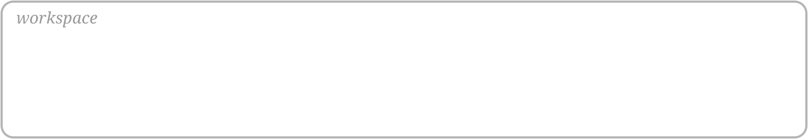
Checkpoint. True or False: the parametrization \(x = -\cosh t\text{,}\) \(y = -\sinh t\text{,}\) \(t \in \R\text{,}\) also traces the left branch of \(x^2 - y^2 = 1\text{.}\) Your answer and reasoning.
The hyperbolic cosine and hyperbolic sine are defined as
The derivatives are
Checkpoint. In the web book the same checkpoint is an interactive True/False question with the book’s explanation.
How it’s coded · Skeletal notes · step 1 of 4. The skeletal notes are a second PreTeXt book whose sections mirror the completed notes, with the work taken out.
From Repositories
M13-Mehdi/source/ the completed notes
ch-7-3.ptx Hyperbolic Functions
Conics.ptx, QuadricSurface.ptx, …
M13-Skeletal-Notes/source/ the fill-in notes, same sections
ch-hyperbolic-skeletal.ptx Hyperbolic Functions (Skeletal Notes)
sec-skel-geom-conics.ptx, …
assignment-1-hyperbolic.ptx … the assignments live here too
How it’s coded · Skeletal notes · step 2 of 4. Where students will write: a blank rounded box drawn in TikZ with <latex-image>, so the printed handout has the room.
From M13-Mehdi/source/ch-hyperbolic-skeletal.ptx
<p>
Find the derivatives <m>\dfrac{d}{dx}(\cosh x)</m> and
<m>\dfrac{d}{dx}(\sinh x)</m> by differentiating the two definitions.
</p>
<sidebyside width="97%">
<image>
<latex-image>
\begin{tikzpicture}
\draw[rounded corners=8pt, draw=gray!55, thick] (0,0) rectangle (15,4.5);
\node[anchor=north west, text=gray!60, font=\footnotesize\itshape]
at (0.25,4.25) {workspace};
\end{tikzpicture}
</latex-image>
<shortdescription>Blank workspace for a handwritten derivation.</shortdescription>
</image>
</sidebyside>
How it’s coded · Skeletal notes · step 3 of 4. A chapter waits in main.ptx inside an UNPOSTED comment; posting deletes the wrapper, and the site rebuilds on push.
From M13-Skeletal-Notes/source/main.ptx
<xi:include href="frontmatter.ptx" />
<!-- <xi:include href="introduction.ptx" /> -->
<!-- Chapter 1: skeletal (fill-in) notes, 7.3 Hyperbolic Functions -->
<xi:include href="ch-hyperbolic-skeletal.ptx" />
<!-- Chapter 2: skeletal (fill-in) notes, Series and Sequences -->
<xi:include href="ch-series-skeletal.ptx" />
<!-- Chapter 3: skeletal (fill-in) notes, 3D Space and Vector Algebra -->
<xi:include href="ch-geometry-skeletal.ptx" />
<!-- Chapter 4: skeletal (fill-in) notes, Functions of Multiple Variables -->
<!-- UNPOSTED <xi:include href="ch-functions-multiple-variables-skeletal.ptx" /> UNPOSTED
-->
<!-- Chapter 5: the problem sets -->
<xi:include href="exercises.ptx" />
<!-- Placeholder, in the book only while everything else is unposted;
scripts/desk_action.py toggles it automatically. -->
<!-- UNPOSTED <xi:include href="ch-coming-soon.ptx" /> UNPOSTED -->
How it’s coded · Skeletal notes · step 4 of 4. The Posting Desk makes that edit with a script: find the wrapped include, put the bare include back, then validate and commit.
From M13-Mehdi/scripts/desk_action.py
def wrapped_re(href):
return re.compile(
r'<!--\s*UNPOSTED(?:-WITH topic="([^"]*)")?\s+'
r'(<xi:include\s+href="\.?/?%s"\s*/>)\s+UNPOSTED\s*-->' % re.escape(href)
)
…
def post_include(path, href):
"""Unwrap one include. Returns 'done', 'already', or 'absent'."""
text = read(path)
m = wrapped_re(href).search(text)
if m is None:
return "already" if inc_re(href).search(text) else "absent"
write(path, text[: m.start()] + m.group(2) + text[m.end():])
return "done"
How it’s coded · The completed notes · step 1 of 3. After class the completed section has the work done, with each formula numbered so later pages can cite it.
From M13-Mehdi/source/ch-7-3.ptx
<p>
The derivatives are given as follows.
<md>
<mrow xml:id="eq-hyp-dcosh">\frac{d}{dx}(\cosh x) \amp = \sinh x</mrow>
<mrow xml:id="eq-hyp-dsinh">\frac{d}{dx}(\sinh x) \amp = \cosh x</mrow>
</md>
</p>
<p>
Both formulas follow directly from the definitions, since
<m>\frac{d}{dx}e^x = e^x</m> and <m>\frac{d}{dx}e^{-x} = -e^{-x}</m>.
</p>
How it’s coded · The completed notes · step 2 of 3. <statement correct="yes"> makes the checkpoint a True/False question; <feedback> explains it after students answer.
From M13-Mehdi/source/ch-7-3.ptx
<exercise xml:id="checkpoint-hyp-left-branch-downward">
<title>True or False</title>
<statement correct="yes">
<p>
The parametrization <m>x = -\cosh t</m>, <m>y = -\sinh t</m>,
<m>t \in \R</m>, also traces the left branch of <m>x^2 - y^2 = 1</m>.
</p>
<p>
Justify your answer fully: give a proof if the statement is true, or a
counterexample if it is false.
</p>
</statement>
<feedback>
<p>
Every such point lies on the hyperbola, since
<md>(-\cosh t)^2 - (-\sinh t)^2 = \cosh^2 t - \sinh^2 t = 1,</md>
and on its left branch, since <m>-\cosh t \leq -1</m>. …
</p>
…
How it’s coded · The completed notes · step 3 of 3. In the skeletal notes the checkpoint asks for an answer and reasons, with a workspace box instead of buttons.
From M13-Mehdi/source/ch-hyperbolic-skeletal.ptx
<exercise xml:id="skel-checkpoint-hyp-left-branch-downward">
<title>True or False</title>
<statement>
<p>
The parametrization <m>x = -\cosh t</m>, <m>y = -\sinh t</m>,
<m>t \in \R</m>, also traces the left branch of <m>x^2 - y^2 = 1</m>.
</p>
<p>
<em>True or false? Your answer and reasoning.</em>
</p>
<sidebyside width="97%">
<image>
<latex-image>
\begin{tikzpicture}
\draw[rounded corners=8pt, draw=gray!55, thick] (0,0) rectangle (15,4);
\node[anchor=north west, text=gray!60, font=\footnotesize\itshape]
…
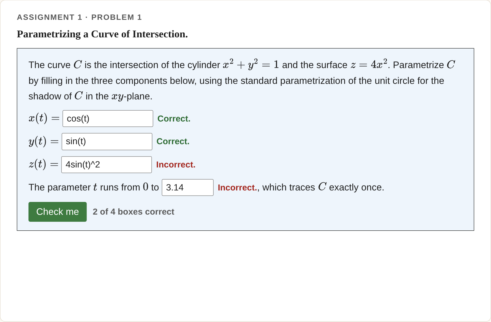
Numbers within a tolerance, expressions like 4cos(t)^2, or words.
Each box earns its own credit; check as often as you like.
After the due date the worked solution appears under the problem.
How it’s coded · Check me · step 1 of 5. Each <var/> in the statement becomes an answer box, in order; width sets its size.
From MATH14-Skeletal/source/hw1-online.ptx
<exercise xml:id="ex-hw1o-parametrize-intersection">
<title>Parametrizing a Curve of Intersection</title>
<statement>
<p>
The curve <m>C</m> is the intersection of the cylinder
<m>x^2 + y^2 = 1</m> and the surface <m>z = 4x^2</m>. Parametrize
<m>C</m> by filling in the three components below, using the
standard parametrization of the unit circle for the shadow of
<m>C</m> in the <m>xy</m>-plane.
</p>
<p><m>x(t) =</m> <var width="14"/></p>
<p><m>y(t) =</m> <var width="14"/></p>
<p><m>z(t) =</m> <var width="14"/></p>
<p>
The parameter <m>t</m> runs from <m>0</m> to <var width="8"/>,
which traces <m>C</m> exactly once.
</p>
</statement>
How it’s coded · Check me · step 2 of 5. In <setup>, the matching <var> lists conditions, checked in order. A string is a regular expression: \s* allows spaces, and case="insensitive" accepts COS(t).
From MATH14-Skeletal/source/hw1-online.ptx
<setup>
<var case="insensitive">
<condition string="cos\s*\(\s*t\s*\)">
<feedback>
<p>Correct.</p>
</feedback>
</condition>
<condition string="sin\s*\(\s*t\s*\)">
<feedback>
<p>Incorrect.</p>
</feedback>
</condition>
</var>
<var case="insensitive">
<condition string="sin\s*\(\s*t\s*\)">
<feedback>
<p>Correct.</p>
</feedback>
…
How it’s coded · Check me · step 3 of 5. Later conditions recognize particular wrong answers, such as \(4\sin^2(t)\) for \(z(t)\) or \(\pi\) instead of \(2\pi\text{.}\) Numbers match within a tolerance.
From MATH14-Skeletal/source/hw1-online.ptx
…
</feedback>
</condition>
<condition string="4\s*\*?\s*(sin\s*\(\s*t\s*\)\s*\^\s*2|sin\s*\^\s*2\s*\(\s*t\s*\))">
<feedback>
<p>Incorrect.</p>
</feedback>
</condition>
<condition string="cos\s*\(\s*t\s*\)\s*\^\s*2">
<feedback>
<p>Incorrect.</p>
</feedback>
</condition>
</var>
<var>
<condition number="6.283" tolerance="0.005">
<feedback>
<p>Correct.</p>
</feedback>
…
How it’s coded · Check me · step 4 of 5. Each solution carries a component name; adding the name to <version include> releases it at the next build. The commented lines are the release history.
From MATH14-Skeletal/publication/publication.ptx
<solution component="hw1-solutions"> … </solution>
<!-- publication/publication.ptx -->
<!-- <version include="hw1-solutions hw2-solutions hw3-solutions
hw4-solutions hw5-solutions hw6-solutions
hw7-solutions hw8-solutions hw9-solutions
hw10-solutions review1-solutions review2-solutions
review3-solutions review4-solutions"/> -->
<!-- <version include="hw1-solutions review1-solutions"/> -->
<version include="hw1-solutions hw2-solutions review1-solutions"/>
How it’s coded · Check me · step 5 of 5. A small XSL override prints released solutions directly under each assignment problem instead of behind a click.
From MATH14-Skeletal/xsl/custom-html.xsl
<!-- In "Assignments and Review Problems" a posted solution is printed -->
<!-- straight below its problem instead of being hidden behind a knowl. -->
<!-- PreTeXt has a publisher switch for this (knowl/@example-solution), -->
<!-- but that is global: it would also unfold the solutions of every -->
<!-- worked example in the text. These templates are the core's own -->
<!-- "born visible" branch, restricted to that one chapter. Which -->
<!-- solutions exist at all is decided by <version include="..."/> in -->
<!-- publication/publication.ptx. The review sets and the sample past -->
<!-- exam (a worksheet) are left out: like the MATH 13 pages, their -->
<!-- solutions stay behind the default knowls, one click under each -->
<!-- problem, once released. -->
<xsl:template match="exercise[ancestor::chapter[@xml:id = 'ch-problems']]
[not(ancestor::section[starts-with(@xml:id,
'sec-exercises-review')])]
[not(ancestor::worksheet)]/solution"
mode="is-hidden">
<xsl:text>false</xsl:text>
</xsl:template>
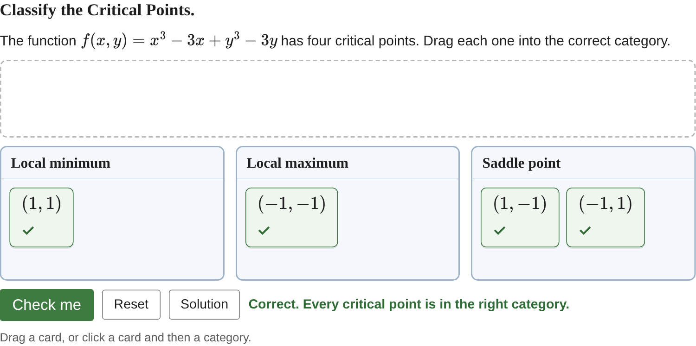
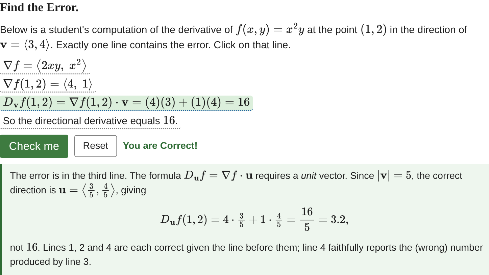
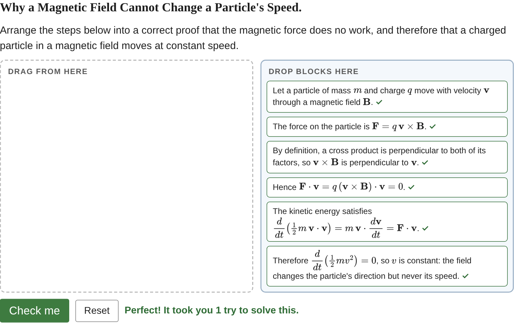
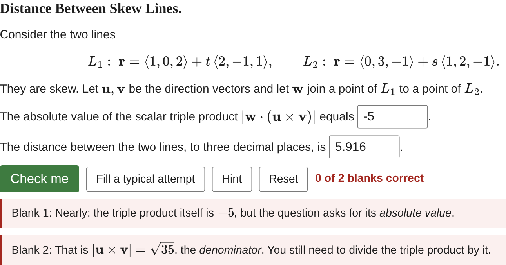
Card sort, Parsons, clickable area, multiple choice and select, true/false, fill in, short answer: each is a few elements of markup.
How it’s coded · Exercise types · step 1 of 8. Triggered by <statement> + <cardsort>.
One <match> per category: its <response> labels the category and each <premise> is a card that belongs there.
A <match> can hold several premises; both saddle points share one here.
Cards and labels are ordinary PreTeXt, so <m> works in both; a <solution> explains the sort.
From M13-Mehdi/source/review-problems-4.ptx
<exercise xml:id="rs-cardsort-critical">
<title>Classify the Critical Points</title>
<statement>
<p>
The function <m>f(x,y) = x^3 - 3x + y^3 - 3y</m> has four
critical points. Drag each one into the correct category.
</p>
</statement>
<cardsort>
<match>
<premise><m>(1,1)</m></premise>
<response>Local minimum</response>
</match>
…
How it’s coded · Exercise types · step 2 of 8. Triggered by <statement> + <blocks>.
Write the <block>s in the correct order: the source order is the answer key.
Students see the blocks shuffled. The order numbers have no effect while randomize="yes"; with randomize="no" they fix the starting order.
A block marked correct="no" is a distractor that belongs nowhere in the proof.
From M13-Mehdi/source/review-problems-2.ptx
<exercise xml:id="rs-parsons-no-work">
<title>Why a Magnetic Field Cannot Change a Particle's Speed</title>
<statement>
<p>Arrange the steps below into a correct proof that the
magnetic force does no work, …</p>
</statement>
<!-- Keep each <m> on ONE source line inside a <block>. -->
<blocks randomize="yes">
<block order="1">
<p>
Let a particle of mass <m>m</m> and charge <m>q</m> move with
velocity <m>\mathbf v</m> through a magnetic field <m>\mathbf B</m>.
</p>
…
How it’s coded · Exercise types · step 3 of 8. Triggered by <statement> + <areas>.
Write the text students will see, with each clickable piece wrapped in <area>.
Mark each area correct="yes" or correct="no"; an unmarked area counts as correct.
<feedback> holds the explanation students read after they check.
From M13-Mehdi/source/review-problems-3.ptx
<exercise xml:id="rs-clickable-error">
<title>Find the Error</title>
<statement>
<p>
Below is a student's computation … Exactly one line contains
the error. Click on that line.
</p>
</statement>
<feedback> … </feedback>
<areas>
<p><area correct="no">
<m>\nabla f = \left\langle 2xy,\; x^2\right\rangle</m></area></p>
<p><area correct="no">
…
How it’s coded · Exercise types · step 4 of 8. Triggered by <statement> + <choices>.
Each <choice> has its own <statement> and <feedback>.
Mark the right one correct="yes"; randomize="yes" shuffles the choices.
A choice’s feedback appears when it is picked, so each wrong answer gets its own explanation.
From M13-Mehdi/source/review-problems-2.ptx
<exercise xml:id="rs-mc-vector-identity">
<title>Which Identity Fails?</title>
<statement>
<p>
Exactly one of the following is <em>not</em> valid for all
vectors <m>\mathbf a, \mathbf b, \mathbf c</m> in <m>\R^3</m>.
Which one?
</p>
</statement>
<choices randomize="yes">
<choice>
<statement><p><m>\mathbf a\cdot(\mathbf b\times\mathbf c)
= (\mathbf a\times\mathbf b)\cdot\mathbf c</m></p></statement>
…
How it’s coded · Exercise types · step 5 of 8. The same element as multiple choice.
Two or more correct="yes" choices switch the buttons to checkboxes.
multiple-correct="yes" on <choices> forces checkboxes even with one.
Feedback on every choice, right or wrong, says why.
From M13-Mehdi/source/review-problems-2.ptx
<exercise xml:id="rs-multiselect-quadrics">
<title>Which of These Are Hyperboloids?</title>
<statement>
<p>
None of the equations below is in standard position. … select
<em>every</em> equation whose surface is a hyperboloid, of one
sheet or of two.
</p>
</statement>
<choices randomize="yes">
<choice correct="yes">
<statement><p><m>x^2 + y^2 - z^2 - 2x = 0</m></p></statement>
<feedback><p>Correct. Completing the square gives …</p></feedback>
…
How it’s coded · Exercise types · step 6 of 8. Triggered by one attribute: <statement correct="no">.
correct="yes" or correct="no" on the statement is all it takes.
<feedback> explains the answer after students choose.
From M13-Mehdi/source/review-problems-3.ptx
<exercise xml:id="rs-tf-directional">
<title>True or False</title>
<statement correct="no">
<p>
If every directional derivative <m>D_{\mathbf u}f(P_0)</m> exists
at a point <m>P_0</m>, then <m>f</m> must be continuous at
<m>P_0</m>.
</p>
<p>
Justify your answer fully: …
</p>
</statement>
<feedback>
…
How it’s coded · Exercise types · step 7 of 8. Triggered by <var/> in the statement.
In <setup>, the first <var> grades the first blank, with <condition>s checked from the top.
number with tolerance compares numerically; string matches a regular expression.
Later conditions catch particular mistakes, each with its own <feedback>.
From M13-Mehdi/source/review-problems-2.ptx
<exercise xml:id="rs-fillin-skew-lines">
<title>Distance Between Skew Lines</title>
<statement>
<p> … The absolute value of the scalar triple product
<m>\left|\mathbf w\cdot(\mathbf u\times\mathbf v)\right|</m>
equals <var width="6"/>. </p>
<p> The distance between the two lines, to three decimal
places, is <var width="8"/>. </p>
</statement>
<setup>
<var>
<condition number="5">
<feedback><p>Correct.</p></feedback>
…
How it’s coded · Exercise types · step 8 of 8. Triggered by <statement> + <response/>.
Runestone stores each response for the instructor to grade.
A plain web build shows the prompt only.
From M13-Skeletal-Notes, July sampler
<exercise xml:id="rs-shortanswer-products">
<title>The Roles of the Two Products</title>
<statement>
<p>
In two or three sentences, explain why a magnetic field can
bend a charged particle's path into a circle but can never
make it move faster. …
</p>
</statement>
<response/>
</exercise>
How it coaches. Knows the problems on the page. Asks questions; says why a wrong answer fails, never how to fix it. Confirms an answer only with the student’s justification.
Built-in limits. Three hints per problem, for the whole quarter. A five-minute pause after each hint. No tutor on review sets: they rehearse exams.
Runs in the student’s browser with their own free Google AI Studio key. Nothing passes through the course site.
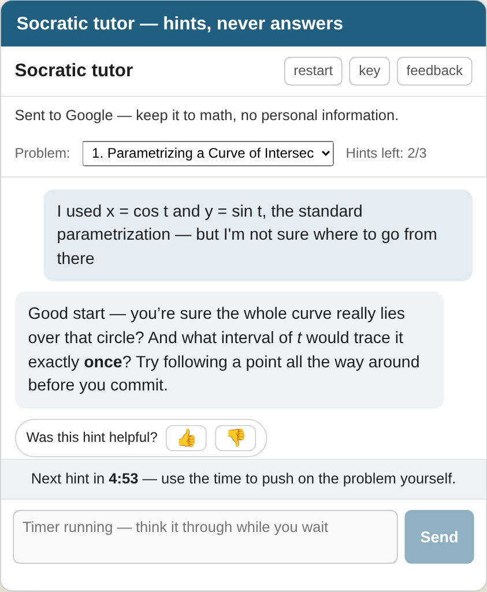
How it’s coded · The AI tutor · step 1 of 6. One XSL template adds two scripts at the foot of every page the build writes.
From MATH14-Skeletal/xsl/custom-html.xsl
<xsl:template name="extra-js-footer">
<script src="external/math-input-palette.js"></script>
<script src="external/custom.js"></script>
</xsl:template>
How it’s coded · The AI tutor · step 2 of 6. The script stops at once unless the page is an assignment. Otherwise it collects each exercise statement, without solutions, hints, or Runestone’s answer data.
From MATH14-Skeletal/assets/custom.js
(function () {
var page = window.location.pathname.split("/").pop() || "";
if (page.indexOf("sec-exercises-hw") !== 0) return;
var articles = document.querySelectorAll("article.exercise");
if (!articles.length) return;
// Harvest statements now, while the DOM still holds raw LaTeX.
// The <script type="application/json"> blobs inside each Runestone
// exercise carry the answer patterns and feedback, so scripts are
// stripped along with the solutions; the answer <input> boxes have
// no text content, so each is replaced by a visible "___" blank.
function clean(el) {
var c = el.cloneNode(true);
c.querySelectorAll(
".solutions, .solution, .hint, .answer, .autopermalink,
.knowl-output, iframe, script, style"
).forEach(function (n) { n.remove(); });
c.querySelectorAll("input").forEach(function (n) {
…
How it’s coded · The AI tutor · step 3 of 6. The Tutor button loads the widget in an iframe and hands it the problems with postMessage; the widget fills its problem list from that message.
From MATH14-Skeletal/assets/custom.js · gemini-tutor.html
// assets/custom.js
function sendContext() {
if (frameReady) frame.contentWindow.postMessage(context, "*");
}
…
function openPanel() {
if (!frame) {
frame = document.createElement("iframe");
frame.id = "m14-tutor-frame";
frame.src = "external/gemini-tutor.html";
frame.addEventListener("load", function () {
frameReady = true;
sendContext();
});
panel.appendChild(frame);
}
…
…
How it’s coded · The AI tutor · step 4 of 6. Each reply is one request to Gemini with the student’s own key, the rules as the system instruction, and the conversation so far. A list of fallback models keeps it working when one is retired or busy.
From MATH14-Skeletal/assets/gemini-tutor.html
async function askGemini() {
const body = {
systemInstruction: { parts: [{ text: systemInstruction() }] },
…
generationConfig: { temperature: 0.4, maxOutputTokens: 8192 },
…
const url = "https://generativelanguage.googleapis.com/v1beta/models/"
+ chain[idx] + ":generateContent";
resp = await fetch(url, {
method: "POST",
headers: { "Content-Type": "application/json", "x-goog-api-key": apiKey() },
body: JSON.stringify(body),
});
if (resp.ok) { lastModelUsed = chain[idx]; break; }
…
}
…
How it’s coded · The AI tutor · step 5 of 6. The page enforces the limits, not the model: three replies per problem, counted in the browser. The five-minute wait is currently switched off for testing (COOLDOWN_MS = 0); set it back to 5 * 60 * 1000 before students rely on it.
From MATH14-Skeletal/assets/gemini-tutor.html
/* ===== hint budget ======================================================= */
// Hard limits enforced by the interface, not the model: per problem, at
// most HINT_LIMIT tutor replies in total — EVERY reply counts, there is no
// free intake reply — with COOLDOWN_MS between replies. Counters live in
// localStorage, survive restarts and reloads, and never reset — solutions
// are published after the due date.
const HINT_LIMIT = 3;
// TEMPORARY — the wait between hints is switched off for testing. Restore it
// with 5 * 60 * 1000 (five minutes). Everything else follows this constant:
// at 0 the countdown never appears and the system prompt stops telling the
// student a wait exists, so the two can never drift apart.
const COOLDOWN_MS = 0;
const HINT_STORE = "math14-hints-v1";
…
function recordReply(label) {
const d = loadHints();
const p = d.probs[label] || { replies: 0 };
…
How it’s coded · The AI tutor · step 6 of 6. The instructions open with one rule that nothing overrides, then list the only five things the tutor may do.
From MATH14-Skeletal/assets/gemini-tutor.html
const BASE_INSTRUCTION = `You are a Socratic tutor for MATH 14 (Santa Clara University),
embedded on an assignment page of the course's notes, …
THE ONE RULE, above everything else: never reveal any part of a final answer or
completed solution to any exercise. …
What you MAY do — these are your only tools:
1. Very gentle starting nudges: one small question per message about how to begin
thinking about the problem at hand. …
2. Explain why wrong answers are wrong — but never how to fix them. …
3. Point to the book — and when a student is stuck on how to BEGIN, reach for this
FIRST, ahead of tool 1. …
4. Definitions and course conventions: vectors are written in bold, …
5. Confirm answers the student has JUSTIFIED. …
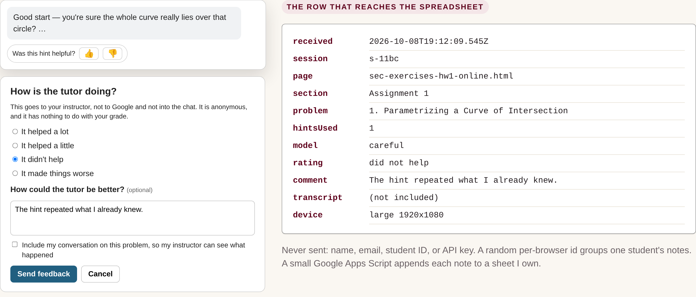
Never sent: name, email, student ID, or API key. A small Google Apps Script appends each note to a sheet I own.
How it’s coded · The feedback form · step 1 of 4. Every note carries the same context: page, problem, hints used, model, screen size, and a random browser id. The thumb or the form fills in the rating, comment, and transcript.
From MATH14-Skeletal/assets/gemini-tutor.html
function feedbackPayload(extra) {
return Object.assign({
sentAt: new Date().toISOString(),
session: sessionId(),
page: (pageContext && pageContext.page) || "",
section: (pageContext && pageContext.section) || "",
problem: currentProb || "",
hintsUsed: currentProb ? hintsUsed(currentProb) : 0,
model: currentModel().id, // which model the student had chosen
modelUsed: lastModelUsed, // the model id that actually answered last
rating: "",
comment: "",
transcript: "",
device: (window.innerWidth <= 600 ? "small" : "large") + " " +
window.innerWidth + "x" + window.innerHeight,
}, extra);
}
How it’s coded · The feedback form · step 2 of 4. Sent as text/plain with no-cors, so Apps Script accepts it without a preflight and a redirect cannot file it twice.
From MATH14-Skeletal/assets/gemini-tutor.html
function postFeedback(payload) {
// text/plain keeps this a "simple" cross-origin request, which Apps Script
// accepts without a preflight; it reads the JSON from the request body.
//
// no-cors from the first try, deliberately. Apps Script answers a POST with
// a redirect to a different host, which the browser refuses to expose to
// us: a plain fetch REJECTS even though the row was already written. Doing
// that and then retrying files every note twice, one second apart. We never
// read the response anyway, so send once and let an opaque reply stand.
// What still rejects is a genuine network failure.
return fetch(FEEDBACK_URL, {
method: "POST",
mode: "no-cors",
headers: { "Content-Type": "text/plain;charset=utf-8" },
body: JSON.stringify(payload),
});
}
How it’s coded · The feedback form · step 3 of 4. The Apps Script parses the note and appends one row; an error comes back as a reply, never as a failure the student sees.
From MATH14-Skeletal/ai-tutor/feedback-endpoint.gs
function doPost(e) {
try {
var raw = (e && e.postData && e.postData.contents) || '';
var d = JSON.parse(raw || '{}');
var sheet = getSheet_();
sheet.appendRow([
new Date(),
clip_(d.sentAt, LIMITS.field),
clip_(d.session, LIMITS.field),
clip_(d.page, LIMITS.field),
clip_(d.section, LIMITS.field),
clip_(d.problem, LIMITS.field),
Number(d.hintsUsed) || 0,
rating_(d.rating),
clip_(d.comment, LIMITS.comment),
clip_(d.transcript, LIMITS.transcript),
clip_(d.device, LIMITS.field),
clip_(d.model, LIMITS.field),
…
How it’s coded · The feedback form · step 4 of 4. About two minutes, once per course.
From MATH14-Skeletal/ai-tutor/README.md
1. Make a spreadsheet (personal Google account).
2. Extensions › Apps Script: paste feedback-endpoint.gs, save.
3. Deploy › New deployment › Web app
Execute as: Me Who has access: Anyone
4. Copy the Web app URL (it ends in /exec).
5. In assets/gemini-tutor.html set
const FEEDBACK_URL = "https://script.google.com/macros/s/…/exec";
then rebuild: the feedback button appears.
6. Send one test note and check that a row appears.
python3 scripts/tutor_feedback_report.py \
feedback.csv --html report.html
How the hints landed overall; careful versus quick model; which assignments and problems draw complaints; every comment, negative ones first.
The feedback report generated from sample rows: rating counts, a model comparison, complaints by problem, and comments.
How it’s coded · The feedback report · step 1 of 3. Export the sheet as CSV and run the script; --html writes the page shown here.
From MATH14-Skeletal/scripts/tutor_feedback_report.py
"""Summarize the Socratic tutor's student feedback.
Reads the CSV exported from the feedback spreadsheet (File -> Download ->
Comma-separated values; see ai-tutor/README.md) and writes a report: what
students think overall, which assignments and problems the complaints cluster
on, and every open-ended comment grouped so the negative ones are read first.
python3 scripts/tutor_feedback_report.py feedback.csv
python3 scripts/tutor_feedback_report.py feedback.csv --html report.html
python3 scripts/tutor_feedback_report.py feedback.csv --since 2026-09-01
python3 scripts/tutor_feedback_report.py feedback.csv --assignment 3
"""
How it’s coded · The feedback report · step 2 of 3. Columns are matched by name, dates parsed, and duplicate rows from an older widget removed.
From MATH14-Skeletal/scripts/tutor_feedback_report.py
def load(path, since=None, assignment=None):
with open(path, newline="", encoding="utf-8-sig") as handle:
rows = list(csv.DictReader(handle))
# Tolerate a renamed or reordered header row: match on lowercased names.
cleaned = []
for row in rows:
item = {(k or "").strip().lower(): (v or "").strip() for k, v in row.items()}
item["when"] = parse_date(item.get("sentat")) or parse_date(item.get("received"))
item["hintsused"] = int(item["hintsused"]) if item.get("hintsused",
"").isdigit() else 0
item["rating"] = known_rating(item.get("rating", ""))
cleaned.append(item)
cleaned = dedupe(cleaned)
…
How it’s coded · The feedback report · step 3 of 3. Ratings are tallied in a fixed order; assignments and problems are sorted with the most complaints first.
From MATH14-Skeletal/scripts/tutor_feedback_report.py
…
unrecognized rather than quietly left out of the table.
"""
counts = Counter(r.get("rating", "") for r in rows)
named = [(name, counts.get(name, 0)) for name in RATINGS]
unknown = sum(n for value, n in counts.items() if value and value not in RATINGS)
return named, counts.get("", 0), unknown
…
def group_scores(rows, key):
"""Per group: total, positives, negatives — sorted worst-first."""
groups = defaultdict(lambda: {"n": 0, "pos": 0, "neg": 0, "hints": []})
for row in rows:
name = row.get(key, "") or "(not recorded)"
bucket = groups[name]
bucket["n"] += 1
if row.get("rating") in POSITIVE:
bucket["pos"] += 1
elif row.get("rating") in NEGATIVE:
bucket["neg"] += 1
…
Write in VS Code or a GitHub Codespace → push to main → GitHub Actions builds → GitHub Pages publishes.
A private page per course: click Post, Lock, or Release, then tell Claude in a chat. More in a minute.
Solutions wait in the source until their due date: behind a comment in MATH 13, a one-line switch in MATH 14.
Claude Code works in each repository under written rules: validate every build, never invent mathematics.
Each course is five sites from one toolchain: course notes, skeletal notes and assignments, instructor editions, lecture slides, and the syllabus.
How it’s coded · Build and publish · step 1 of 3. A push to main builds the book in PreTeXt’s Docker image, which includes LaTeX, Sage, and PreFigure, and publishes it to GitHub Pages.
From M13-Mehdi/.github/workflows/pretext-deploy.yml
# .github/workflows/pretext-deploy.yml (trimmed)
on:
push:
branches: ["main"]
jobs:
build-and-deploy:
runs-on: ubuntu-latest
container: pretextbook/pretext-full:1.9
steps:
- uses: actions/checkout@v4
- run: pip install -r requirements.txt --break-system-packages
- run: prefig init
- run: pretext build --deploys
- run: pretext deploy --no-push
- run: git push origin gh-pages --force
How it’s coded · Build and publish · step 2 of 3. A Codespace uses the same image and pinned versions, so a local build matches the published one.
From M13-Mehdi/.devcontainer · requirements.txt
// .devcontainer/devcontainer.json
"image": "pretextbook/pretext-full:1.9", // uses latest image from
https://hub.docker.com/r/PreTeXtBook/pretext-full/tags
# requirements.txt
pretext == 2.44.0
prefig == 0.6.7
How it’s coded · Build and publish · step 3 of 3. Each repository’s CLAUDE.md says how to post, lock, and release, and how to check the work before pushing.
From M13-Mehdi/CLAUDE.md
<!-- CLAUDE.md, the rules the coding assistant follows -->
3. Never invent content: a request that needs material not in the repo
(e.g. an assignment with no problem set in `source/`) is not posted —
set its `status` to `"needs-input"` and a one-line `result` saying what
to provide (the page shows it to the instructor).
…
## Validating a change
Before any push:
1. Well-formedness of every touched file:
`xmllint --noout source/<file>.ptx` (locked blocks are comments, so a
malformed marker shows up here).
2. If the PreTeXt CLI is available (`pip install -r requirements.txt`),
run `pretext build web` and confirm it succeeds; then confirm the target
page exists in `output/web/` to get its exact filename. If the CLI
can't be installed in the session, say so and derive the filename from
the section's `xml:id` instead.
<!-- .claude/skills/: post-notes, post-assignment, release-solutions -->
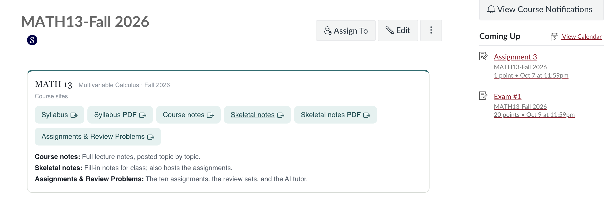
The MATH 13 Fall 2026 home page on Camino. A card titled MATH 13, Multivariable Calculus, Fall 2026, Course sites, holds six buttons: Syllabus, Syllabus PDF, Course notes, Skeletal notes, Skeletal notes PDF, and Assignments and Review Problems, with one line on what each book is for. On the right, Coming Up lists Assignment 3, due October 7, and Exam 1, October 9.
One card, six links. Each opens a PreTeXt site: public pages, no login, the same links all term.
Which book is for what. Completed notes go up topic by topic; the skeletal notes are for class and hold the assignments.
Camino keeps the calendar. Due dates and points stay in Camino; the content lives in the books.
Website
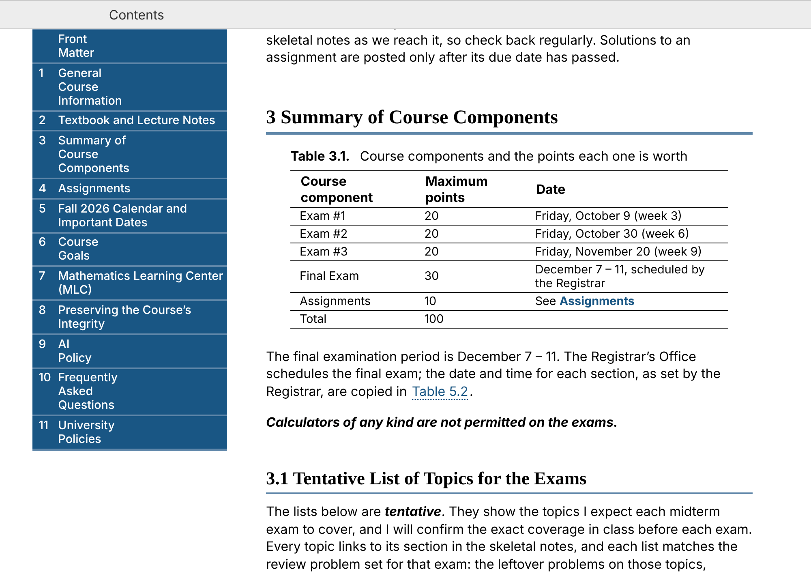
The MATH 13 syllabus website, section 3, Summary of Course Components: a contents sidebar on the left, and Table 3.1 with the points for the three exams, the final exam, and the assignments, followed by the start of the exam topic lists.
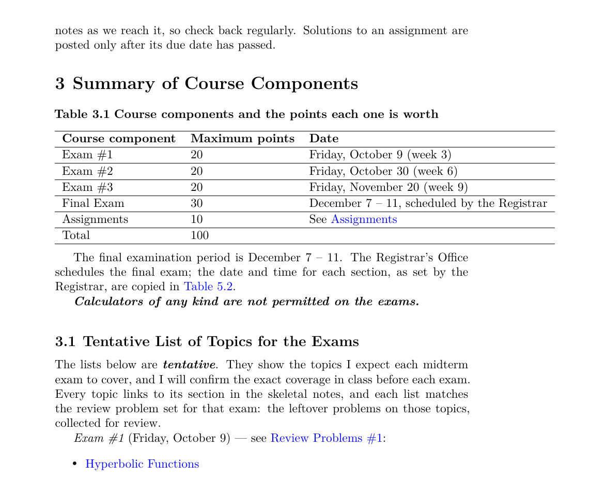
Page 5 of the MATH 13 syllabus PDF: the same section 3 typeset by LaTeX, with Table 3.1 and the start of the exam topic lists as blue links.
Both from one file, source/grading.ptx, on every push: the website and the PDF.
One source, two outputs. Every push builds the website and the PDF from the same files, so they never disagree.
Accessible. Real headings and table headers; alt text and a long description for every picture.
Linkable. Every section and table has its own address, and “Table 5.2” stays right when things move.
Linked to the books. Each exam’s topics link to their sections in the skeletal notes and to the review set.
Easy to change mid-term. One edit updates both, and the history keeps every change: Oct 4, “Exam #1 topics: drop the binomial series.”
Reusable. MATH 14’s syllabus has the same files and sections; next term starts from a copy.
How it’s coded · The syllabus · step 1 of 5. The syllabus is a PreTeXt <article>: a title, then one file per section, organized like the course books.
From MATH13-Syllabus-Fall2026/source/main.ptx
<!-- MATH13-Syllabus-Fall2026/source/main.ptx -->
<pretext xml:lang="en-US" xmlns:xi="http://www.w3.org/2001/XInclude">
<docinfo>
<directories external="../assets"/>
…
</docinfo>
<article xml:id="math13-syllabus">
<title>MATH 13</title>
<subtitle>Fall Quarter 2026 <ndash/> Santa Clara University</subtitle>
<xi:include href="./frontmatter.ptx" />
<xi:include href="./course-info.ptx" />
<xi:include href="./materials.ptx" />
<xi:include href="./grading.ptx" />
<xi:include href="./assignments.ptx" />
<xi:include href="./schedule.ptx" />
…
…
How it’s coded · The syllabus · step 2 of 5. A table gets an xml:id, a title, and a header row. <xref> prints “Table 5.2” or a section’s title, and keeps the number right when sections move.
From MATH13-Syllabus-Fall2026/source/grading.ptx
…
<title>Summary of Course Components</title>
<introduction>
<table xml:id="table-components">
<title>Course components and the points each one is worth</title>
<tabular halign="left" top="minor" bottom="minor">
<col width="28%"/> …
<row header="yes" bottom="minor">
<cell>Course component</cell>
<cell>Maximum points</cell>
<cell>Date</cell>
</row>
<row>
<cell>Exam #1</cell> <cell>20</cell> <cell>Friday, October 9 (week 3)</cell>
</row>
…
<row bottom="minor">
<cell>Assignments</cell> <cell>10</cell>
<cell>See <xref ref="assignments" text="title"/></cell>
…
How it’s coded · The syllabus · step 3 of 5. Each exam’s topic list links to its review set and to every section in the skeletal notes, so the syllabus doubles as a study map.
From MATH13-Syllabus-Fall2026/source/grading.ptx
<!-- source/grading.ptx; "…" stands for https://mahmadi-ops.github.io,
and long lines are wrapped for the slide -->
<p>
<em>Exam #1</em> (Friday, October 9) <mdash/> see
<url href="…/M13-Skeletal-Notes/worksheet-review-problems-1.html">Review
Problems #1</url>:
</p>
<p>
<ul>
<li>
<p><url href="…/M13-Skeletal-Notes/skel-chapter-hyperbolic-functions.html">
Hyperbolic Functions</url></p>
</li>
<li>
<p><url href="…/M13-Skeletal-Notes/sec-skel-series-infinite.html">
Infinite Series</url></p>
</li>
…
How it’s coded · The syllabus · step 4 of 5. Every picture has alt text and a longer description for screen readers; the PDF gets the same figure and caption.
From MATH13-Syllabus-Fall2026/source/assignments.ptx
<!-- source/assignments.ptx -->
<figure xml:id="fig-gradescope">
<caption>Write your solutions by hand, scan them into a single PDF, then
assign pages to questions in Gradescope.</caption>
<image source="gradescope-submission.png" width="88%">
<shortdescription>Handwritten pages are scanned with a phone into a
single PDF, then submitted</shortdescription>
<description>
<p>
A three-step cartoon. On the left, a stack of handwritten pages
covered in sketches of axes, surfaces, and integrals. An arrow
points to the middle, where a phone scans one of the pages, a bright
line sweeping down the screen. …
</p>
</description>
</image>
</figure>
How it’s coded · The syllabus · step 5 of 5. Two targets: on every push the workflow builds the website and the PDF and publishes them together, the PDF beside the site.
From MATH13-Syllabus-Fall2026/project.ptx · deploy.yml
…
<project ptx-version="2">
<targets>
<target name="web" format="html" />
<target name="print" format="pdf"
output-filename="math13-syllabus-fall2026.pdf" />
</targets>
</project>
# .github/workflows/deploy.yml, the build steps
- name: Build HTML
run: pretext build web
- name: Build PDF
run: pretext build print
- name: Assemble site (HTML at root, PDF alongside)
run: |
mkdir -p site
cp -r output/web/. site/
cp output/print/math13-syllabus-fall2026.pdf site/
The two pages of the link desk in a scrolling frame, and six zones beside it: most used, student-facing sites, my tools, repositories and rulebooks, the AI tutor, and posting and administration. Clicking a zone highlights it on the page. Below them: how posting works, in one line.
A replay of the MATH 14 and MATH 13 Posting Desks beside a Claude chat. Clicking Post or Release solutions asks for confirmation and queues a request; the chat button then plays Claude’s steps: read the desk, make the one-line change, check it, commit to main, update the desk, and rebuild the site.
A replay of the two desks as of Oct 9; nothing is posted from this slide.
A week on the MATH 14 desk
The skeletal section, for class: §2.1 · Oct 7
The completed notes for it: §2.1 · Oct 8
The next assignment, with its due date: Assignment 4 · posted Oct 9, due Fri Oct 16
Solutions once the due date passes: Assignment 3 · due Wed Oct 7, released Oct 8
| MATH 13 | MATH 14 | |
|---|---|---|
| In the chat | “check the posting desk” | “check the MATH 14 posting desk” |
| Completed notes | M13-Mehdi |
MATH-14 |
| Skeletal notes, assignments | M13-Skeletal-Notes |
MATH14-Skeletal |
| Solutions | Public; Lock hides them in SOLUTION-LOCKED comments with the due date | Hidden; Release adds hwN-solutions to one line |
| Rulebook | M13-Mehdi/CLAUDE.md |
Each repository’s CLAUDE.md, pointing to MATH 13’s |
Both desks: every click asks first; every action can be undone; validated before every push; never marked posted before the push; only what the books contain; the desk is the only posting record.
How it’s coded · The Posting Desk · step 1 of 6. Each desk is one HTML page. Its state is a JSON block inside the page: every section, assignment, and solution set with its dates, the request queue, and the Activity log. The page draws itself from that block.
From MATH 14 Posting Desk · a private claude.ai page
…
{"name": "Ch. 2 — Multiple Integrals", "topics": [
{"id": "section-double-integrals-rectangles", …
"posted": "2026-10-08", "live": true, "instant": false},
{"id": "section-double-integrals-general-regions", …
"posted": null, "live": false, "instant": false},
… ]},
"assignments": [
{"n": 4, "title": "Assignment 4", "due": "2026-10-16", …
"posted": "2026-10-09", "solutions": "locked", "released": null, …},
… ],
"requests": [
{"id": "req-1790193016520", "kind": "notes", "key": "sec-arc-length",
"payload": {"title": "Arc Length of a Curve", "repo": "MATH14-Skeletal"},
"status": "done", "result": "Posted to the skeletal site."},
… ],
"log": [
{"when": "2026-10-08", "text": "Assignment 3 solutions released."},
… ]
…
How it’s coded · The Posting Desk · step 2 of 6. After the confirm, the click adds a request with status "sent" and republishes the page with the new state written into it. Nothing in the books has changed yet.
From MATH 14 Posting Desk · the page’s script
…
function sendRequest(kind, key, payload, label, note){
var reqId = "req-" + Date.now();
state.requests.push({
id: reqId, kind: kind, key: key, payload: payload || {},
ts: new Date().toISOString(), status: "sent"
});
state.log.unshift({ when: today(), text: label,
note: note || "sent to Claude" });
render();
save(reqId);
}
async function save(reqId){ // artifactNS = window.claude.use("artifact")
…
try { await artifactNS.publish(currentSource()); }
catch(e){ … } // on failure the request is withdrawn
}
…
How it’s coded · The Posting Desk · step 3 of 6. The rulebook says what to do with the queue: which repository each request acts on, permission to commit to main once the change is validated, never to invent content, and to mark the desk only after the push.
From M13-Mehdi/CLAUDE.md
…
1. Read the artifact (Artifact tool, `action: "read"`). Its
`<script id="state">` block holds JSON with `requests[]`; act on every
request whose `status` is `"sent"`. Requests carry a `payload.repo`
naming which repo they act on …
2. **Standing authorization**: the instructor chose "publish live
immediately" for panel clicks, so commit panel-initiated changes
directly to `main` in both repos (still validate first).
3. Never invent content: a request that needs material not in the repo
… is not posted — set its `status` to `"needs-input"` …
4. Afterwards update the panel **on top of its current version** …
set each handled request's `status` to `"done"` (with a short `result`),
set the item's `posted`/`released` date (`YYYY-MM-DD`), prepend a `log`
entry, and republish to the same URL …
5. If nothing is pending, do nothing — no commits, no messages.
…
3. Never mark a solution released, or notes posted, on the desk before
the corresponding push has actually been made.
How it’s coded · The Posting Desk · step 4 of 6. A section waits in the source as a commented-out include. desk_action.py removes the wrapper to post and puts it back to unpost; when a change would break a cross-reference it cannot fix, it stops and restores every file.
From M13-Mehdi/source/ch-series-sequences.ptx
<!-- M13-Mehdi/source/ch-series-sequences.ptx -->
<chapter xml:id="chapter-series-sequences" …>
<title>Series and Sequences</title>
<xi:include href="ch-10-2.ptx" />
<xi:include href="ch-10-8.ptx" />
<xi:include href="Taylor.ptx" />
<!-- UNPOSTED <xi:include href="ch-10-10.ptx" /> UNPOSTED -->
</chapter>
<!-- $ python3 scripts/desk_action.py post-notes chapter-binomial-series -->
<xi:include href="ch-10-10.ptx" />
How it’s coded · The Posting Desk · step 5 of 6. MATH 14 hides a solution unless its component is on the version line, so a release adds one name. MATH 13 shows a solution unless it sits inside SOLUTION-LOCKED comments, so a release deletes the markers.
From MATH14-Skeletal · M13-Skeletal-Notes
<!-- MATH 14 · MATH14-Skeletal/publication/publication.ptx and
publication-print.ptx: a solution shows only if its component
is on this line, so a release adds hw4-solutions -->
<version include="hw1-solutions hw2-solutions hw3-solutions review1-solutions"/>
<!-- MATH 13 · M13-Skeletal-Notes/source/
assignment-4-space-vectors-dot-product.ptx: a solution shows
unless it sits in a comment, so a release deletes the markers -->
<!-- SOLUTION-LOCKED assignment="4" due="2026-10-16"
<solution>
<p>
…
</solution>
END SOLUTION-LOCKED -->
How it’s coded · The Posting Desk · step 6 of 6. An item marked instant commits a small request file through the GitHub connection instead, and this workflow applies it with the same script. Today every item goes through Claude.
From M13-Mehdi/.github/workflows/desk-requests.yml
name: Posting Desk requests
# The Posting Desk panel commits small JSON request files into
# desk-requests/ (via the instructor's GitHub connector). This workflow
# reacts to that push, applies each request with scripts/desk_action.py,
# removes the request files, and kicks the site build when the source
# actually changed.
on:
push:
branches: [main]
paths: ["desk-requests/**"]
permissions:
contents: write
actions: write
concurrency:
group: posting-desk
cancel-in-progress: false
…
Each day \(5\%\) of the susceptible fall ill; the infected recover, die, or relapse. Press Evaluate.
About \(90.9\%\) recovered and \(9.1\%\) deceased; the exact limits are \(\frac{10}{11}\) and \(\frac{1}{11}\text{.}\) Section 9.3 in the book
How it’s coded · Sage cells · step 1 of 4. Wrap Sage code in <sage><input>. On the web it becomes a cell with an Evaluate button, run on the SageMathCell server.
From MATH-53/source/applications/sec-epidemic-sage.ptx
<sage>
<input>
T = matrix(QQ, [[0.95, 0.04, 0, 0],
[0.05, 0.85, 0, 0],
[0, 0.10, 1, 0],
[0, 0.01, 0, 1]])
S0 = vector(QQ, [1, 0, 0, 0])
T
</input>
</sage>
How it’s coded · Sage cells · step 2 of 4. Cells on a page share a session, so this one iterates the T and S0 defined above.
From MATH-53/source/applications/sec-epidemic-sage.ptx
<sage>
<input>
S = S0
for k in range(1, 6):
S = T*S
print(k, S.n(digits=4))
</input>
</sage>
How it’s coded · Sage cells · step 3 of 4. Plots work as in Sage: build the lines and show() them; the picture appears under the cell.
From MATH-53/source/applications/sec-epidemic-sage.ptx
<sage>
<input>
N = 200
history = [S0]
for k in range(N):
history.append(T * history[-1])
labels = ["susceptible", "infected", "recovered", "deceased"]
colors = ["blue", "red", "green", "black"]
p = sum(line([(k, history[k][j]) for k in range(N + 1)],
color=colors[j], legend_label=labels[j], thickness=2)
for j in range(4))
p.axes_labels(["day $k$", "fraction of population"])
p.show(ymin=0, ymax=1)
</input>
</sage>
How it’s coded · Sage cells · step 4 of 4. Two short cells connect the computation to the chapter: the long-run state and the eigenvectors of T.
From MATH-53/source/applications/sec-epidemic-sage.ptx
<sage>
<input>
(T^1000 * S0).n(digits=4)
</input>
</sage>
<sage>
<input>
T.eigenvectors_right()
</input>
</sage>
Systems of linear equations
Vectors in \(\R^n\)
Linear transformations
Matrix algebra
Subspaces, basis, dimension
Determinants
Vector spaces
Eigenvalues and eigenvectors
Spectral applications
Orthogonality (newest)
Goal: ready for the coming winter quarter, bringing over the MATH 13 and 14 framework.
Applications already in: images as matrices, recognizing a cat, PageRank, normal modes, least squares.
A linear map from the plane to space: dragging x on the left moves b = Ax on the right, inside a plane that is the range.
\(\R^2 \to \R^3\text{:}\) the range is a plane. Drag \(\mathbf{x}\) on the left; \(\mathbf{b} = A\mathbf{x}\) moves on the right. Drag \(\mathbf{b}\) off the range and the equation becomes inconsistent.
One page serves every figure of this kind; the matrix comes in the URL.
How it’s coded · The MATH 53 demos · step 1 of 4. The page reads its matrix, starting vector, and options from the URL, so one file serves every figure of this kind.
From MATH-53/assets/demos-manim/axb.html
// ---------------- URL parameters ----------------
var Q = {};
location.search.slice(1).split("&").forEach(function (kv) {
if (!kv) return; var p = kv.split("=");
Q[decodeURIComponent(p[0])] = decodeURIComponent(p[1] || "");
});
document.body.className = Q.theme === "light" ? "light" : "dark";
var A = (Q.mat || "1,0:1,1:0,1").split(":").map(function (r) {
return r.split(",").map(Number); });
var m = A.length, n = A[0].length;
var RANGE = parseFloat(Q.range || "5");
var SHOW = Q.show === "true";
var LOCK = Q.lock === "true";
var x0 = (Q.x || "").split(",").map(Number).filter(function (v) {
return !isNaN(v); });
while (x0.length < n) x0.push([-1, 2, 1][x0.length]);
How it’s coded · The MATH 53 demos · step 2 of 4. Pivots give the rank; free columns give a basis for the null space, pivot columns a basis for the range.
From MATH-53/assets/demos-manim/axb.html
…
val = M[i][lead];
for (k = 0; k < cols; k++) M[i][k] -= val * M[r][k];
}
pivots.push(lead); lead++;
}
return { M: M, pivots: pivots };
}
var RA = rref(A), rank = RA.pivots.length;
var nullB = []; // null-space basis in R^n
(function () {
var free = [], j, i;
for (j = 0; j < n; j++) if (RA.pivots.indexOf(j) < 0) free.push(j);
free.forEach(function (f) {
var v = [0, 0, 0]; v[f] = 1;
RA.pivots.forEach(function (p, pi) { v[p] = -RA.M[pi][f]; });
nullB.push(v);
});
})();
How it’s coded · The MATH 53 demos · step 3 of 4. Solving Ax = b row-reduces the augmented matrix; a zero row with a nonzero right side means no solution, and the figure says so.
From MATH-53/assets/demos-manim/axb.html
function solve(b) { // particular solution or null
var aug = A.map(function (r, i) { return r.concat([b[i]]); });
var R = rref(aug), i, j;
for (i = 0; i < m; i++) {
var allz = true;
for (j = 0; j < n; j++) if (Math.abs(R.M[i][j]) > 1e-8) allz = false;
if (allz && Math.abs(R.M[i][n]) > 1e-8) return null;
}
var v = [0, 0, 0];
R.pivots.forEach(function (p, pi) { if (p < n) v[p] = R.M[pi][n]; });
return v;
}
How it’s coded · The MATH 53 demos · step 4 of 4. Each figure is one element with its own parameters. Write & between them, because the source is XML.
From MATH-53/source
<interactive xml:id="int-indep-two-plane"
iframe="demos-manim/axb.html?mat=2,0:1,1:0,3&x=2,1&show=true&theme=dark"
width="100%" aspect="5:4"/>
XML, a build pipeline, and figure tools take time to learn; later chapters go much faster.
Writing the description alongside the figure costs minutes; adding it afterwards costs far more.
Diagrams, interactives, and animations take far more time than the prose around them.
A fixed typo or a clearer example reaches every student the same day.
# the command-line tool
pip install pretext
# a new book, built and viewed
pretext new book
pretext build web
pretext view
Or skip the install: a GitHub Codespace runs the same tools in the browser.
pretextbook.org: guides, sample books, and community support.
prefigure.org: accessible diagrams, inside PreTeXt or on their own.
Come find me. I’m glad to share my setup and help convert a first chapter.
Questions, and a second look at any demo.
MATH 13 notes: mahmadi-ops.github.io/M13-Mehdi
MATH 14 notes: mahmadi-ops.github.io/MATH-14
MATH 53 notes, in progress: mahmadi-ops.github.io/MATH-53
Supported by SCU’s Teaching and Technology Innovation Grant (with Norman Paris) and a Faculty Development AI Exploration grant.
M13-Mehdi/ ├── project.ptx # targets: web · runestone · print ├── publication/ │ ├── publication.ptx # what the web and PDF builds keep │ └── publication-runestone.ptx # the same, minus hints and solutions ├── source/ # 50 .ptx files │ ├── main.ptx # the outline: one xi:include per chapter │ ├── ch-series-sequences.ptx # a chapter; it includes its sections │ ├── Taylor.ptx Conics.ptx … # one section per file │ └── assignment-8-chain-rule.ptx … # one worksheet per assignment ├── assets/ # your files; the web build copies them ├── generated-assets/ # made by the build, committed on purpose ├── output/ # the built books, not committed ├── .github/workflows/ # build and publish; the Posting Desk ├── .devcontainer/ # the Codespace: PreTeXt's Docker image ├── requirements.txt # pretext == 2.44.0 · prefig == 0.6.7 └── CLAUDE.md .claude/skills/ # rules and routines for Claude Code
You edit source/ and assets/. The build makes generated-assets/ and output/. The rest keeps it running: project.ptx and publication/ say what to build, the workflows publish it, .devcontainer/ and requirements.txt pin the tools.
pip install pretext. Or skip the install: a Codespace from PreTeXt’s pretext-codespace template has everything, in the browser.
pretext new book -d my-notes makes project.ptx, a publication file, and source/ with main.ptx, a chapter, and a section to copy.
pretext import notes.tex (experimental) turns a LaTeX file into PreTeXt to start from. Or write sections by hand; each is one <xi:include> in its chapter.
pretext build web, then pretext view serves the book on your machine. Add -x and an xml:id to build one part.
files go in assets/, then <interactive>, <image>, <video>. The build makes PreFigure diagrams, previews, and QR codes into generated-assets/ whenever their source changes.
pretext build print, through LaTeX, with a preview image and a QR code in place of each interactive.
pretext deploy puts the web book on GitHub Pages. PreTeXt’s pretext-deploy.yml workflow runs on demand; uncomment its push lines to publish on every push.
pretextbook.org has the Guide, an annotated sample book that shows the source of each example, and the pretext-support forum.
| You want | You write |
|---|---|
| A section in its own file | <xi:include href="section.ptx"/> |
| Math: inline, display, aligned |
<m> · <md> · <md><mrow>
|
| A numbered, linkable item |
xml:id="…" then <xref ref="…"/>
|
| A photo with alt text | <image source="…"><shortdescription> |
| A diagram from code |
<image><prefigure> · <latex-image>
|
| Your own HTML figure | <interactive iframe="file.html"> |
| A script-driven widget | <interactive platform="javascript"><slate> |
| GeoGebra |
<interactive geogebra="id"> · <slate surface="geogebra">
|
| Desmos | <interactive desmos="id"/> |
| A video | <video source="videos/….mp4"/> |
| Live code | <sage><input>…</input></sage> |
| Web-only or print-only |
component="web" · component="print"
|
| You want | You write |
|---|---|
| Answer boxes that check |
<var/> · <setup><var><condition>
|
| True / False |
<statement correct="yes"> + <feedback>
|
| Multiple choice or select | <choices><choice correct="yes"> |
| Parsons problem |
<blocks><block>, written in the right order |
| Card sort | <cardsort><match><premise><response> |
| Clickable area | <areas><area correct="yes"> |
| Short answer | <response/> |
| Hints and solutions |
<hint> · <answer> · <solution>
|
| Release solutions by date |
component="hw3-solutions" + <version include="…"/>
|
| Slides like these |
<slideshow><section><slide>, built with format="revealjs"
|
| Build and preview |
pretext build · pretext view
|